近代物理學 - 統計力學 (Modern Physics - Statistical Mechanics)#
日期: 2026.05.19, 2026.05.26
閱讀與計算約定
【假設】 說明模型及忽略的效應；【已知】 是前章結果、實驗資料或直接引用的定理；【定義】 固定本節的符號。各類編號在節內使用，跨節引用時附節號。
推導保留「列式 → 代入 → 化簡 → 結果」的順序。等號表示在已列假設下成立的關係；近似、數值四捨五入與數量級估算以 \(\approx\) 或 \(\sim\) 區分。
代入前統一單位：\(1\ \mathrm{eV}=1.602176634\times10^{-19}\ \mathrm{J}\)。指數、對數及三角函數的引數須為無因次；結果另檢查量綱、正負號及適用範圍。
本章模型與符號
分布函數以熱平衡、獨立粒子或可視為獨立的模式為前提。Maxwell–Boltzmann 分布適用於稀薄、非簡併極限；Bose–Einstein 與 Fermi–Dirac 分布則保留量子佔據限制。
符號 |
意義與單位 |
|---|---|
\(\epsilon,f(\epsilon)\) |
單粒子能量 \([\mathrm{J}]\) 或 \([\mathrm{eV}]\)；每態平均佔據數（無因次） |
\(g(\epsilon),n(\epsilon)\) |
離散情形為簡併數、平均粒子數（無因次）；連續情形為每單位能量的態密度、粒子數密度 |
\(N,V\) |
總粒子數（無因次）、體積 \([\mathrm{m^3}]\)；\(n(\epsilon)\) 不等於 \(N/V\) |
\(k,T\) |
波茲曼常數、絕對溫度；\(kT\) 須與 \(\epsilon\) 使用同一能量單位 |
\(\mu(T),\epsilon_F\) |
化學勢與正文沿用的費米能階記號；有限溫度時 \(\epsilon_F=\mu(T)\)，零溫費米能量為 \(\mu(0)\) |
\(u(\nu),u(\lambda)\) |
每單位體積、每單位頻率或波長的能量密度；換變數須帶 Jacobian |
\(N_0,R\) |
9.8 沿用每 kmol 的粒子數與氣體常數；不可直接與每 mol 的數值混用 |
9.1 統計分布 (Statistical Distributions)#
期中考之後，我們一路把量子力學套用到愈來愈複雜的系統上：從只有一個電子的氫原子（第六章），到週期表上的多電子原子（第七章），再到由數個原子鍵結而成的分子（第八章）。走到分子這一步，事情已經相當吃力了：多電子原子的薛丁格方程式早已無法解析求解，只能藉週期表的規律去分類；分子至少原子數與電子數還「數得出來」，例如 CO\(_2\) 只有三個原子，我們還能討論它的 \(sp^2\)、\(sp^3\) 鍵結。
但再往下一步——從分子走到液體、氣體、固體——一立方公尺裡的粒子數就是 \(10^{25}\) 上下的天文數字。這時候「一顆一顆去解」不只是困難，而是根本沒有意義：我們不可能、也不需要知道每一顆粒子的狀態。真正想知道的是群體的行為 (collective behavior)：平均能量是多少、平均速度是多少、有多少比例的粒子處在激發態。回答這類問題的工具，就是統計力學 (statistical mechanics)。
統計力學用到的數學，與機率統計課學過的內容有許多相似之處；差別在於它描述的對象是電子、原子、光子這些基本粒子，因此必須把量子力學的規則——尤其是粒子能不能被分辨、要不要遵守包立不相容原理——放進「怎麼數」的方式裡。本章的路線是：
從古典的馬克士威爾－波茲曼分布出發，重新推導普物學過的理想氣體結果（\(9.2\)、\(9.3\)）。
建立兩種量子統計：波色－愛因斯坦分布與費米－迪拉克分布（\(9.4\)）。
用這些分布回頭嚴格推導第二章只介紹了結論的瑞利－金斯公式與普朗克輻射定律，並由此推出愛因斯坦的受激放射係數關係（\(9.5\)–\(9.7\)）。
最後把統計用到固體：晶格振動造成的比熱，以及金屬中自由電子的費米能量與能量分布（\(9.8\)–\(9.10\)）。
第十章是本學期最後一章，主題是固體與半導體。對電機、光電、電子背景的讀者而言，幾乎所有元件都是固體做的，而要描述 \(10^{23}\) 顆電子在固體中的行為，唯一的辦法就是本章的統計觀念——特別是 \(9.4\) 的費米能階 (Fermi level)，它是理解 N 型、P 型半導體與 PN 接面的起點。
三種粒子、三種分布#
選擇統計分布時，先辨認粒子是否全同、服從何種交換統計，再判斷量子交換效應是否可忽略。
古典近似： 一般稀薄、高溫氣體可忽略量子交換效應，以 Maxwell–Boltzmann 統計描述。相同種類、相同內部態的分子仍是全同粒子；可使用古典近似，不是因為它們有內部結構。
量子統計： 電子、光子，以及處於相同內部態的同種原子或分子，都須遵守相應的全同粒子統計。更換同位素或電荷態會改變粒子種類，不能作為原本全同粒子可分辨的證明。
能不能分辨，會直接改變「有幾種排法」的計數。以教室裡兩個相鄰的座位為例：若坐的是可分辨的吳同學與陳同學，「吳左陳右」與「陳左吳右」是兩種不同的分布；若兩人完全無法分辨，這兩種情況就只算一種。這正是高中排列組合裡 \(P^4_2 = 12\) 與 \(C^4_2 = 6\) 的差別——前者在乎順序，後者不在乎。計數的方式不同，算出來的機率分布自然不同。
不可分辨的粒子又分成兩類，差別在於是否遵守包立不相容原理 (Pauli exclusion principle)：
費米子 (fermion)：自旋為 \(\frac{1}{2}\) 的奇數倍（\(\frac{1}{2}, \frac{3}{2}, \dots\)），例如電子。同一個量子態最多只能被一個粒子佔據——好比教室裡每張椅子只能坐一個人，後進來的人看到某個位置有人坐，就只能另找空位。
波色子 (boson)：自旋為整數（\(0, 1, 2, \dots\)），例如光子。同一個量子態可以容納任意多個粒子——後進來的人無視前面已經坐了人，照樣可以擠進同一個位置。
入座規則不同，最後整間教室的分布當然長得不一樣。這就是三種統計分布的由來：
分布 |
適用的粒子 |
典型例子 |
|---|---|---|
馬克士威爾－波茲曼 (Maxwell–Boltzmann) |
稀薄、非簡併，交換效應可忽略 |
一般條件下的稀薄氣體 |
波色－愛因斯坦 (Bose–Einstein) |
不可分辨、不遵守不相容原理（整數自旋） |
空腔中的光子 |
費米－迪拉克 (Fermi–Dirac) |
不可分辨、遵守不相容原理（半奇數自旋） |
金屬中的自由電子 |
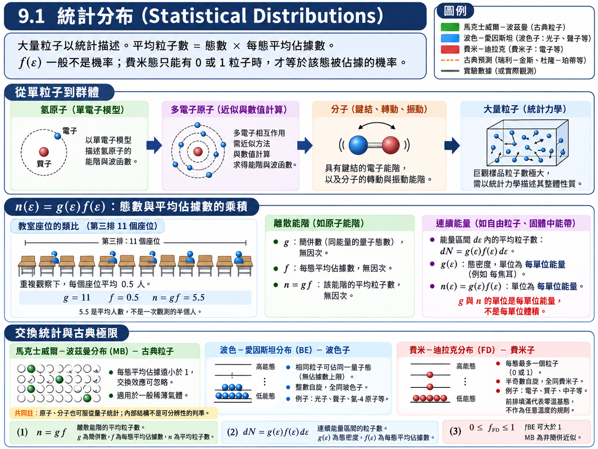
假設與已知 (Assumptions & Preliminaries)#
【定義 1】 狀態數／統計權重 (Number of states / statistical weight)： 能量恰為 \(\epsilon\) 的量子態共有幾個。用教室來比喻，就是「某一排有幾張椅子」。
\[g\left( \epsilon \right) \overset{\text{def}}{=} \text{能量為 } \epsilon \text{ 的量子態數目}\]\(g(\epsilon)\) : 能量 \(\epsilon\) 的統計權重 (Statistical weight)，\([\text{無單位}]\)
\(\epsilon\) : 單一粒子的能量 (Single-particle energy)，\([\text{J}]\) 或 \([\text{eV}]\)
【定義 2】 分布函數 (Distribution function)： 能量為 \(\epsilon\) 的每個單粒子態上，平均有多少粒子。若該態只能空著或佔據一個粒子，平均佔據數才等於其被佔據的機率；波色態的平均佔據數可大於 \(1\)。
\[f\left( \epsilon \right) \overset{\text{def}}{=} \text{能量為 } \epsilon \text{ 的每個態上的平均粒子數}\]\(f(\epsilon)\) : 分布函數／每態平均佔據數 (Mean occupation number)，\([\text{無單位}]\)
註：對古典粒子與波色子，一個態可以擠好幾個粒子，\(f\) 可以大於 \(1\)，此時它是「平均粒子數」而不是嚴格意義的機率；對費米子則恆有 \(f \le 1\)。
【假設 1】 同能量的態彼此等價 (Equivalence of states with equal energy)： 在熱平衡下，一個態的平均佔據數只取決於它的能量，與它是「哪一個」態無關。因此同一能量的 \(g(\epsilon)\) 個態，各自擁有相同的平均佔據數 \(f(\epsilon)\)。
推導：能量為 \(\epsilon\) 的粒子數#
假設教室的第三排有 \(11\) 張椅子，每張椅子有人坐的機率是 \(0.5\)，那麼第三排平均坐了 \(11 \times 0.5 = 5.5\) 人。當人數多到無法逐一點名時，「位置數 \(\times\) 每個位置的佔據機率」就是唯一可行的算法：
\(n(\epsilon)\) : 能量為 \(\epsilon\) 的粒子數 (Number of particles of energy \(\epsilon\))，\([\text{無單位}]\)
當能階密集到可以視為連續時，沿用 \(g,n\) 的記號，但改指每單位能量的密度：
此時 \(g,n\) 的單位為 \(\mathrm{J^{-1}}\) 或 \(\mathrm{eV^{-1}}\)，與積分變數的單位一致；\(g\,d\epsilon\) 才是態數。
若再除以體積 \(V\)，才是每單位體積的態密度或粒子數密度。離散能階的 \(g\) 則仍是無因次簡併數。
【物理知識回顧】 \((9.1)\) 把問題拆成兩件互相獨立的事：\(f(\epsilon)\) 由粒子的種類決定（馬克士威爾－波茲曼、波色－愛因斯坦、費米－迪拉克三選一）；\(g(\epsilon)\) 由系統本身決定（氫原子能階的簡併數、箱子裡的駐波數……）。\(g\) 扮演的是權重 (weight) 的角色：若第三排有 \(13\) 個位置、最後一排只有 \(3\) 個位置，即使每個位置的佔據機率同樣是 \(\frac{1}{2}\)，第三排的人數仍然比較多。
本章後面每一節做的事情都一樣：先決定 \(f\)，再想辦法算出 \(g\)，把兩者相乘得到 \(n\)，接著就能積分出總粒子數、總能量與各種平均值。這和第五章的期望值是同一個精神：不知道分布，就無從計算平均值。
9.2 馬克士威爾－波茲曼統計 (Maxwell-Boltzmann Statistics)#
先從最熟悉的古典粒子開始。熱力學告訴我們：粒子傾向於往低能量的位置填，因此能量愈高的態，被佔據的機率愈低，而且這個衰減是指數形式；衰減得多快，由溫度決定。
降低溫度時，高能態的相對佔據減少；但 Maxwell–Boltzmann 近似不能直接延伸到固定密度的 \(T=0\)。進入簡併區後，需依粒子統計改用 Bose–Einstein 或 Fermi–Dirac 分布。
假設與已知 (Assumptions & Preliminaries)#
【已知 1】 \((9.1)\) 式： \(9.1\) 的結果，此處直接引用。
\[n\left( \epsilon \right) = g\left( \epsilon \right) f\left( \epsilon \right)\]【已知 2】 波茲曼因子 (Boltzmann factor)： 古典統計力學的基本結果（本課程不證明）。作為單粒子平均佔據數時，適用前提為稀薄非簡併近似，且系統與溫度 \(T\) 的環境達成熱平衡；此時一個能量為 \(\epsilon\) 的態，其平均佔據數正比於 \(e^{-\epsilon/kT}\)。
\[f_{MB}\left( \epsilon \right) \propto e^{-\epsilon/kT}\]\(k\) : 波茲曼常數 (Boltzmann constant)，\([\text{J}\cdot\text{K}^{-1}]\)，\(k \approx 1.381 \times 10^{-23} \ \text{J}\cdot\text{K}^{-1} \approx 8.617 \times 10^{-5} \ \text{eV}\cdot\text{K}^{-1}\)
\(T\) : 絕對溫度 (Absolute temperature)，\([\text{K}]\)
【已知 3】 歸一化條件 (Normalization condition)： 系統的總粒子數 \(N\) 是已知的，所有能量的粒子數加起來必須等於它。
\[\sum_{\epsilon} n\left( \epsilon \right) = N \qquad \text{或} \qquad \int_{0}^{\infty} n\left( \epsilon \right)d\epsilon = N\]\(N\) : 系統的總粒子數 (Total number of particles)，\([\text{無單位}]\)
【已知 4】 熱能的尺度 (Scale of thermal energy)： 室溫 \(T \approx 300 \ \text{K}\) 時，\(kT\) 這個數字值得直接背起來。
\[kT\Big|_{300\ \text{K}} \approx 0.0259 \ \text{eV} \approx \frac{1}{40} \ \text{eV}\]
推導：馬克士威爾－波茲曼分布#
把【已知 2】的比例常數寫成 \(A\)：
\(f_{MB}(\epsilon)\) : 馬克士威爾－波茲曼分布函數 (Maxwell–Boltzmann distribution function)，\([\text{無單位}]\)
\(A\) : 歸一化常數 (Normalization constant)，\([\text{無單位}]\)，由【已知 3】決定
代回 \((9.1)\)：
\(A\) 之所以叫歸一化常數，是因為它由【已知 3】決定：系統裡有 \(10\) 顆粒子或 \(10^{25}\) 顆粒子，\(A\) 就不一樣。這件事在古典統計裡看起來無關緊要，但到了 \(9.4\) 的費米－迪拉克分布，這個常數會透過化學勢寫成費米能階，成為整個半導體物理的主角。
例題 9.1：氫原子的第一激發態有多少原子#
題目： \(0^\circ\text{C}\)、一大氣壓下，一立方公尺的氫約含有 \(2.7 \times 10^{25}\) 個原子。求在 \(0^\circ\text{C}\) 與 \(10{,}000^\circ\text{C}\) 時，位於第一激發態 (\(n = 2\)) 的原子數量。
解答：
\((9.3)\) 中的常數 \(A\) 對兩個能階相同，因此取比值就能把它消掉：
先算 \(g\)。 由第六章與第七章的量子數，\(n = 1\) 只有 \(1s\)：\(l = 0\)、\(m_l = 0\)，但 \(m_s = \pm\frac{1}{2}\)，故 \(g(\epsilon_1) = 2\)。\(n = 2\) 有 \(2s\)（\(l = 0\)，\(m_s = \pm\frac{1}{2}\)，共 \(2\) 個態）與 \(2p\)（\(l = 1\)，\(m_l = 0, \pm 1\)，每個再配 \(m_s = \pm\frac{1}{2}\)，共 \(6\) 個態），故 \(g(\epsilon_2) = 8\)。這和計算週期表殼層容量 \(2n^2\) 的方式完全相同——注意這是 \(8\) 個態，不代表有 \(8\) 個電子。
再算能量差。 由第六章的能階公式，\(\epsilon_1 = -13.6 \ \text{eV}\)、\(\epsilon_2 = \epsilon_1/2^2 = -3.4 \ \text{eV}\)，故 \(\epsilon_2 - \epsilon_1 = 10.2 \ \text{eV}\)。
(a) \(T = 0^\circ\text{C} = 273 \ \text{K}\)：
也就是說，在 \(0^\circ\text{C}\) 時大約每 \(10^{188}\) 個原子才有一個處在第一激發態。我們的樣本只有 \(2.7 \times 10^{25}\) 個原子，因此可以確定所有原子都在基態。課本舉了一個更極端的比較：若宇宙中所有物質都以氫原子的形式存在，總數大約只有 \(10^{78}\) 個——即使整個宇宙都處在 \(0^\circ\text{C}\)，同樣找不到一個激發態的氫原子。
(b) \(T = 10{,}000^\circ\text{C} = 10{,}273 \ \text{K}\)（接近恆星表面的溫度）：
此時一立方公尺中處在激發態的原子約有 \(\left( 2.7 \times 10^{25} \right)\left( 4.0 \times 10^{-5} \right) \approx 10^{21}\) 個——雖然只佔總數的一小部分，卻是非常大的數字。
【物理知識回顧】 這一題真正要看的是數量級。\(g\) 的比值 \(8/2 = 4\) 算了半天幾乎沒有影響，一切由指數決定；而 \(kT\) 恰好就在指數的分母上——溫度從 \(273 \ \text{K}\) 升到約 \(10^4 \ \text{K}\)，比值就從 \(10^{-188}\) 變成 \(10^{-5}\)，相差了 \(183\) 個數量級。
這也說明了為什麼「宇宙中的氫原子幾乎全在基態」只在 \(0^\circ\text{C}\) 這個前提下成立。宇宙中絕大部分的發光物質是溫度數千到數萬 K 的恆星，上面有大量處在激發態的原子不斷躍遷放光（再加上黑體輻射），我們才看得到太陽與滿天星斗。
例題 9.2：剛體雙原子分子的轉動態居量#
題目： 求出剛體雙原子分子轉動態居量 (population) 的公式。
解答：
「剛體」代表只考慮轉動、不考慮振動。由第八章，轉動量子數為 \(J\) 的態能量為
\(J\) : 轉動量子數 (Rotational quantum number)，\(J = 0, 1, 2, \dots\)，\([\text{無單位}]\)
\(I\) : 分子的轉動慣量 (Moment of inertia)，\([\text{kg}\cdot\text{m}^2]\)
統計權重。 角動量在任一特定方向的分量 \(L_z\) 只能是 \(\hbar\) 的整數倍，從 \(J\hbar\) 經過 \(0\) 到 \(-J\hbar\) 共有 \(2J+1\) 個可能值——這與第六章的空間量子化是同一件事。這 \(2J+1\) 個方向各自是不同的量子態，故
歸一化常數。 令 \(J = 0\) 態中的分子數為 \(n_0\)。由於 \(g(\epsilon_0) = 1\)、\(\epsilon_0 = 0\)，\((9.3)\) 給出 \(n_0 = A\)。代回 \((9.3)\)：
驗證 CO 在 \(20^\circ\text{C}\) 時 \(J = 7\) 最多。 取 CO 的鍵長 \(R \approx 0.113 \ \text{nm}\)、約化質量 \(m' = \frac{12 \times 16}{12 + 16} \ \text{u} \approx 6.86 \ \text{u}\)，則 \(I = m'R^2 \approx 1.45 \times 10^{-46} \ \text{kg}\cdot\text{m}^2\)，\(\dfrac{\hbar^2}{2I} \approx 2.39 \times 10^{-4} \ \text{eV}\)；\(T = 293 \ \text{K}\) 時 \(kT \approx 0.0252 \ \text{eV}\)。把 \(J\) 暫時當作連續變數、令 \(\beta \overset{\text{def}}{=} \dfrac{\hbar^2}{2IkT}\)，求 \(n_J\) 的極大值：
最接近的整數是 \(J = 7\)，與課本的結論一致。
【物理知識回顧】 \(n_J\) 是兩個彼此拉扯的因子相乘：\(2J+1\) 隨 \(J\) 線性增加（高 \(J\) 的方向比較多），\(e^{-J(J+1)\hbar^2/2IkT}\) 隨 \(J\) 指數衰減（高 \(J\) 的能量比較高）。兩者的競爭讓分布在中間某個 \(J\) 出現峰值。分子光譜中轉動譜線的強度正比於各轉動能階的相對居量，因此這個峰值可以直接用實驗驗證。
兩題都用能階的波茲曼權重與簡併數計算居量比。量子化的內部能階可以具有波茲曼權重；這不表示原子或分子因此成為可分辨粒子。作為氣體的單粒子佔據分布時，仍須滿足交換效應可忽略的非簡併條件。
9.3 理想氣體中的分子能量 (Molecular Energies in an Ideal Gas)#
前兩個例題之所以容易，是因為 \(g(\epsilon)\) 數得出來：\(n = 1\) 有 \(2\) 個態、\(n = 2\) 有 \(8\) 個態、轉動態有 \(2J+1\) 個。但一個裝了 \(10^{25}\) 個分子的容器，能階密到可以視為連續，\(g(\epsilon)\) 根本無法逐一列舉。
本節要學的是一個整章會用三次的技巧（\(9.3\)、\(9.5\)、\(9.9\)）：如果 \(g(\epsilon)\) 無法直接算，就先換到一個「態均勻分布」的空間去數，再利用該空間的變數與能量之間的數學關係，做一次變數變換換回能量。對理想氣體而言，這個空間就是動量空間 (momentum space)。
假設與已知 (Assumptions & Preliminaries)#
【已知 1】 \((9.3)\) 的連續形式： 能量介於 \(\epsilon\) 與 \(\epsilon + d\epsilon\) 之間的分子數。
\[n\left( \epsilon \right)d\epsilon = \left[ g\left( \epsilon \right)d\epsilon \right]\left[ f_{MB}\left( \epsilon \right) \right] = A g\left( \epsilon \right)e^{-\epsilon/kT}d\epsilon \tag{9.4}\]\(n(\epsilon)\,d\epsilon\) : 能量介於 \(\epsilon\) 與 \(\epsilon + d\epsilon\) 之間的分子數 (Number of molecules with energy between \(\epsilon\) and \(\epsilon + d\epsilon\))，\([\text{無單位}]\)
\(g(\epsilon)\,d\epsilon\) : 該能量區間內的態數 (Number of states in the interval)，\([\text{無單位}]\)
【假設 1】 大體積自由粒子的動量態計數 (Momentum-state counting)： 在體積固定的大箱中，自由粒子的邊界條件給出均勻的動量格點；連續近似下，態數正比於 \(d^3p\)。等向性使能量只依賴 \(p=|\vec p|\)，因此可用球殼 \(4\pi p^2dp\) 計數。這裡均勻的是態的格點密度，不是粒子的動量機率分布。
【已知 2】 動量空間的球殼體積 (Volume of a spherical shell in momentum space)： 動量大小介於 \(p\) 與 \(p + dp\) 之間的區域是一個半徑 \(p\)、厚度 \(dp\) 的球殼。
\[dV_p = 4\pi p^2\,dp\]\(p\) : 動量大小 (Magnitude of momentum)，\([\text{kg}\cdot\text{m}\cdot\text{s}^{-1}]\)
【已知 3】 理想氣體分子的能量—動量關係 (Energy–momentum relation)： 理想氣體分子之間沒有位能，能量全部是非相對論性的動能。
\[\epsilon = \frac{p^2}{2m}, \qquad p = \left( 2m\epsilon \right)^{1/2}\]\(m\) : 分子質量 (Molecular mass)，\([\text{kg}]\)
【已知 4】 定積分表 (Table of definite integrals)： 皆可由 Gamma 函數 \(\displaystyle\int_0^\infty x^{s-1}e^{-ax}dx = \frac{\Gamma(s)}{a^s}\) 以及 \(\Gamma\left( \frac{3}{2} \right) = \frac{\sqrt{\pi}}{2}\)、\(\Gamma\left( \frac{5}{2} \right) = \frac{3\sqrt{\pi}}{4}\) 得到；適用前提為 \(a > 0\)。這類「多項式乘上指數」的定積分，兩個世紀前的數學家已經全部算好，查表即可。
(a) \(\displaystyle\int_0^\infty x^{1/2}e^{-ax}dx = \frac{1}{2a}\sqrt{\frac{\pi}{a}}\)
(b) \(\displaystyle\int_0^\infty x^{3/2}e^{-ax}dx = \frac{3}{4a^2}\sqrt{\frac{\pi}{a}}\)
(c) \(\displaystyle\int_0^\infty x^{3}e^{-ax^2}dx = \frac{1}{2a^2}\)
(d) \(\displaystyle\int_0^\infty x^{4}e^{-ax^2}dx = \frac{3}{8a^2}\sqrt{\frac{\pi}{a}}\)
【推導 1】 \(dp\) 與 \(d\epsilon\) 的換算 (Converting \(dp\) to \(d\epsilon\))： 把【已知 3】對 \(\epsilon\) 微分。
\[\begin{split}\begin{gather*} p &\overset{\text{已知 3}}{=}& \left( 2m\epsilon \right)^{1/2} \\ dp &=& \frac{1}{2}\left( 2m \right)^{1/2}\epsilon^{-1/2}\,d\epsilon \\ dp &=& \left( \frac{m}{2\epsilon} \right)^{1/2}d\epsilon \end{gather*}\end{split}\]
推導：能態數 \(g(\epsilon)\)#
由【假設 1】與【已知 2】，動量介於 \(p\) 與 \(p + dp\) 之間的動量態數正比於球殼體積 \(4\pi p^2\,dp\)。把 \(4\pi\)、態的密度與其他常數整包吸收成一個常數 \(B\)——反正最後都會被歸一化決定：
\(B\) : 比例常數 (Proportionality constant)，最後由歸一化決定
每一個動量大小 \(p\) 恰好對應一個能量 \(\epsilon\)，因此「動量介於 \(p\) 與 \(p + dp\) 的態」與「能量介於 \(\epsilon\) 與 \(\epsilon + d\epsilon\) 的態」是同一批態，只是換了一個變數來標記：
把右邊的 \(p\) 與 \(dp\) 全部換成 \(\epsilon\)：
（投影片上的係數寫作 \(2m^{3/2}\)，依上式應為 \(\sqrt{2}\,m^{3/2}\)；這個常數下一步就會被歸一化吸收，不影響任何結果。）
能態數正比於 \(\sqrt{\epsilon}\)——能量愈高，可用的態愈多。把它代入【已知 1】，並把 \(\epsilon\) 以外的常數全部併成 \(C\)：
\(C\) : 歸一化常數 (Normalization constant)，\([\text{J}^{-3/2}]\)
推導：歸一化常數 \(C\)#
系統有 \(N\) 個分子，把所有能量的分子數加起來必須等於 \(N\)（\(9.2\)【已知 3】）：
（第二行取【已知 4(a)】的 \(a = 1/kT\)，故 \(\frac{1}{2a}\sqrt{\frac{\pi}{a}} = \frac{kT}{2}\left( \pi kT \right)^{1/2}\)。）
可以清楚看到 \(C\) 與 \(N\) 成正比——這正是「歸一化常數由系統粒子數決定」的意思。代回 \((9.8)\) 得到理想氣體的分子能量分布 (molecular energy distribution)：
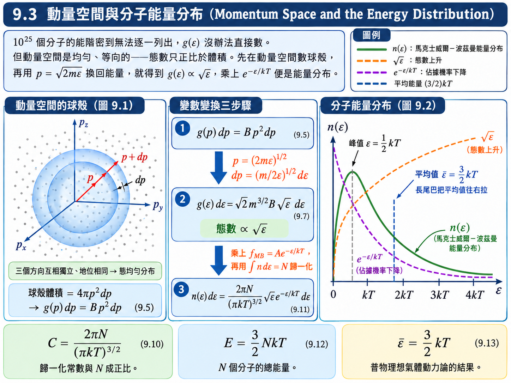
\((9.11)\) 是一個上升的 \(\sqrt{\epsilon}\)（態數）乘上一個下降的 \(e^{-\epsilon/kT}\)（佔據機率）：在 \(\epsilon = 0\) 時為零，先升後降，峰值落在 \(\frac{d}{d\epsilon}\left( \sqrt{\epsilon}\,e^{-\epsilon/kT} \right) = 0\)，即 \(\epsilon = \frac{1}{2}kT\) 處，之後拖著一條長尾巴（圖 9.2）。
推導：總能量與平均能量#
知道了分布，就能像期望值一樣計算任何與能量有關的量。好比要算全班同學身上總共有多少錢：把「每一排的人數 \(\times\) 那一排每人的錢」從第一排加到最後一排。這裡就是把「能量為 \(\epsilon\) 的分子數 \(\times\) 每個分子的能量 \(\epsilon\)」從 \(0\) 積分到 \(\infty\)：
（指數 \(\frac{3}{2}\) 的來源：\(\frac{1}{2}\) 次方來自分布本身的 \(\sqrt{\epsilon}\)，另外一次方來自被平均的能量 \(\epsilon\)。）
\(E\) : \(N\) 個氣體分子的總能量 (Total energy of \(N\) molecules)，\([\text{J}]\)
平均能量就是總能量除以總數：
\(\overline{\epsilon}\) : 平均分子能量 (Average molecular energy)，\([\text{J}]\)
這就是普物理想氣體動力論 (kinetic theory) 的經典結果，現在從馬克士威爾－波茲曼分布直接積分出來。注意平均值 \(\frac{3}{2}kT\) 比峰值 \(\frac{1}{2}kT\) 大得多——長尾巴把平均值往右拉。
推導：分子速率分布#
同樣的分布可以換成任何與能量有已知關係的變數。最常用的是速率：
\(v\) : 分子速率 (Molecular speed)，\([\text{m}\cdot\text{s}^{-1}]\)
代入 \((9.11)\)。速率介於 \(v\) 與 \(v + dv\) 的分子，恰好就是能量介於對應 \(\epsilon\) 與 \(\epsilon + d\epsilon\) 的分子，故 \(n(v)\,dv = n(\epsilon)\,d\epsilon\)：
\(n(v)\,dv\) : 速率介於 \(v\) 與 \(v + dv\) 之間的分子數 (Number of molecules with speed between \(v\) and \(v + dv\))，\([\text{無單位}]\)
這就是馬克士威爾－波茲曼速率分布 (Maxwell–Boltzmann speed distribution)。
三種「平均」速率#
有了 \((9.14)\)，可以定義三種不同意義的代表速率。
(a) 均方根速率 (Root-mean-square speed)。 先求 \(v^2\) 的平均，再開根號。令 \(a \overset{\text{def}}{=} \dfrac{m}{2kT}\)：
\(v_{\text{rms}}\) : 均方根速率 (Root-mean-square speed)，\([\text{m}\cdot\text{s}^{-1}]\)
（另一個檢查方式：\(\frac{1}{2}m\overline{v^2} = \overline{\epsilon} = \frac{3}{2}kT\)，與 \((9.13)\) 一致。）
為什麼要用「均方根」這種繞一圈的平均？對學電的人來說並不陌生：交流電 (AC) 的電壓、電流有正有負，直接平均會得到零，完全沒有資訊，所以要先平方、再平均、再開根號。速率本身雖然恆正，但許多物理量（例如速度分量）有正有負；更重要的是，\(v_{\text{rms}}\) 直接連到平均動能。
(b) 最可能速率 (Most probable speed)。 分布曲線的最高點，也就是「最多分子擁有的速率」：
\(v_p\) : 最可能速率 (Most probable speed)，\([\text{m}\cdot\text{s}^{-1}]\)
(c) 平均速率 (Average speed) \(\overline{v} = \sqrt{8kT/\pi m}\)，見例題 9.3。
三者的大小順序為 \(v_p < \overline{v} < v_{\text{rms}}\)（圖 9.3）。該用哪一個「平均」，取決於你想要的資訊——就像討論全台灣的收入時，平均數會被少數高收入者拉高，有時中位數或眾數反而更有代表性。在物理上，\(v_p\) 回答「最多分子跑多快」，\(\overline{v}\) 回答「一般分子跑多快」，\(v_{\text{rms}}\) 則直接對應平均動能。
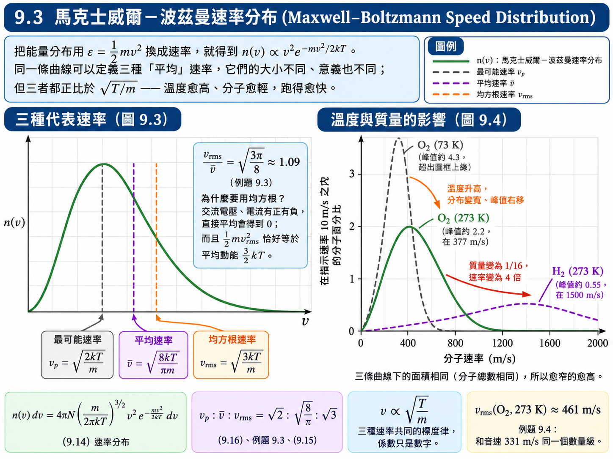
例題 9.3：均方根速率比平均速率大 9%#
題目： 證明理想氣體分子的均方根速率比其平均速率大 \(9\%\)。
解答：
把 \(n(v)\,dv\) 乘上 \(v\)，從 \(0\) 積分到 \(\infty\)，再除以 \(N\)（期望值的定義）。令 \(a = \dfrac{m}{2kT}\)：
與 \((9.15)\) 相除：
均方根速率比平均速率大約 \(9\%\)。
【物理知識回顧】 三種代表速率的係數各不相同（\(\sqrt{2}\)、\(\sqrt{8/\pi}\)、\(\sqrt{3}\)），但這些都只是數字。真正要記住的是它們共同的標度律：
同一種氣體，溫度愈高跑得愈快；同一個溫度，分子愈輕跑得愈快。圖 9.4 的三條曲線正是這件事：\(273 \ \text{K}\) 的氫分子（質量 \(2\)）比同溫的氧分子（質量 \(32\)）快 \(\sqrt{16} = 4\) 倍，分布被拉得又寬又平；\(73 \ \text{K}\) 的氧分子則擠在低速區。
例題 9.4：0°C 下氧分子的均方根速率#
題目： 求出 \(0^\circ\text{C}\) 下氧分子 (O\(_2\)) 的均方根速率。
解答：
氧的原子量為 \(16.0 \ \text{u}\)，O\(_2\) 的分子量為 \(32.0 \ \text{u}\)：
【物理知識回顧】 \(461 \ \text{m}/\text{s}\) 這個數字會讓你聯想到什麼？不是光速，而是音速（\(0^\circ\text{C}\) 空氣中約 \(331 \ \text{m}/\text{s}\)）。兩者同一個數量級並不意外：聲音本來就是靠空氣分子的運動與碰撞來傳遞的，傳遞擾動的速度當然不會和分子本身的速度差太多。同溫度下的氫分子 \(v_{\text{rms}} \approx 1840 \ \text{m}/\text{s}\)，恰好是氧的 \(4\) 倍。
能量均分定理 (Equipartition of Energy)#
\((9.13)\) 的 \(\frac{3}{2}kT\) 可以拆成 \(3 \times \frac{1}{2}kT\)。氣體分子在 \(x\)、\(y\)、\(z\) 三個方向的運動互相獨立（否則就不需要三個變數），而且地位相同（沒有理由某個方向比較特別），因此三個方向的平均動能必須相等，各分到 \(\frac{1}{2}kT\)：
這個想法可以推廣成古典統計中非常普遍的能量均分定理 (equipartition theorem)：
在溫度 \(T\) 的熱平衡狀態下，古典系統的每一個自由度，平均能量為 \(\frac{1}{2}kT\)。
這裡的「自由度」不限於線性速度分量：能量公式中每一個以平方形式出現的變數都算一個自由度——轉動角速度分量 \(\frac{1}{2}I_i\omega_i^2\) 算，振動位移 \(\frac{1}{2}K(\Delta x)^2\) 也算。
【推導 2】 每個平方項分到 \(\frac{1}{2}kT\) (Each quadratic term carries \(\frac{1}{2}kT\))： 設能量中某一項為 \(bq^2\)（\(q\) 可以是速度分量、角速度、位移……，\(b > 0\)），由波茲曼因子，\(q\) 的機率分布正比於 \(e^{-bq^2/kT}\)。利用高斯積分 \(\displaystyle\int_{-\infty}^{\infty}e^{-aq^2}dq = \sqrt{\frac{\pi}{a}}\) 與 \(\displaystyle\int_{-\infty}^{\infty}q^2e^{-aq^2}dq = \frac{1}{2a}\sqrt{\frac{\pi}{a}}\)（取 \(a = b/kT\)）：
\[\begin{split}\begin{gather*} \overline{bq^2} &\overset{\text{(9.2)}}{=}& \frac{\displaystyle\int_{-\infty}^{\infty}bq^2e^{-bq^2/kT}dq}{\displaystyle\int_{-\infty}^{\infty}e^{-bq^2/kT}dq} \\ &=& b\cdot\frac{\frac{kT}{2b}\sqrt{\pi kT/b}}{\sqrt{\pi kT/b}} \\ &=& \frac{1}{2}kT \end{gather*}\end{split}\]\(q\) : 任一以平方形式出現在能量中的變數 (Any variable appearing quadratically in the energy)
\(b\) : 對應的正係數 (Positive coefficient)，例如 \(\frac{1}{2}m\)、\(\frac{1}{2}I\)、\(\frac{1}{2}K\)
結果與 \(b\) 無關：不論質量多大、彈簧多硬，每個平方項都只分到 \(\frac{1}{2}kT\)。這也說明了均分定理的適用前提——能量必須是連續的（古典），且該項是平方形式。
常見系統的平均能量（不含振動，除非特別註明）：
系統 |
自由度 |
平均能量 |
|---|---|---|
單原子氣體分子 |
\(3\)（平移） |
\(\frac{3}{2}kT\) |
剛體雙原子分子（O\(_2\)、N\(_2\)） |
\(3\)（平移）\(+ 2\)（垂直於鍵軸的兩個轉動） |
\(\frac{5}{2}kT\) |
剛體線性三原子分子（CO\(_2\)） |
\(3 + 2\) |
\(\frac{5}{2}kT\) |
剛體非線性三原子分子（H\(_2\)O） |
\(3 + 3\) |
\(3kT\) |
一維諧振子 |
\(1\)（動能）\(+ 1\)（位能） |
\(kT\) |
固體中的原子（三維振動） |
\(3 \times 2\) |
\(3kT\) |
自由度也可以用「\(3 \times\) 原子數 \(-\) 約束數」來數。雙原子分子本有 \(6\) 個座標，兩原子間距固定是一個約束，剩 \(5\) 個。三原子分子要小心：剛體必須把三組原子間距都固定（兩條鍵長，加上兩端原子之間的距離或鍵角），\(9 - 3 = 6\)；若是線性分子，繞分子軸的轉動慣量趨近於零、不算一個轉動自由度，故為 \(5\)。若只扣掉兩條鍵長，會多出來的那些自由度其實是彎曲振動，屬於振動自由度，不能用剛體轉動來算。
振動為什麼是 \(kT\) 而不是 \(\frac{1}{2}kT\)？ 振動和平移、轉動不一樣——它有位能。一維諧振子的能量為 \(\frac{1}{2}mv_x^2 + \frac{1}{2}K(\Delta x)^2\)，兩個平方項各分到 \(\frac{1}{2}kT\)（這也就是國中學過「簡諧運動的平均動能等於平均位能」），合計 \(kT\)。若一個原子能在三維空間中自由振動（例如固體晶格中的原子），平均能量就是 \(3kT\)，而不是氣體的 \(\frac{3}{2}kT\)。這個「多一倍」在 \(9.8\) 計算固體比熱時至關重要。
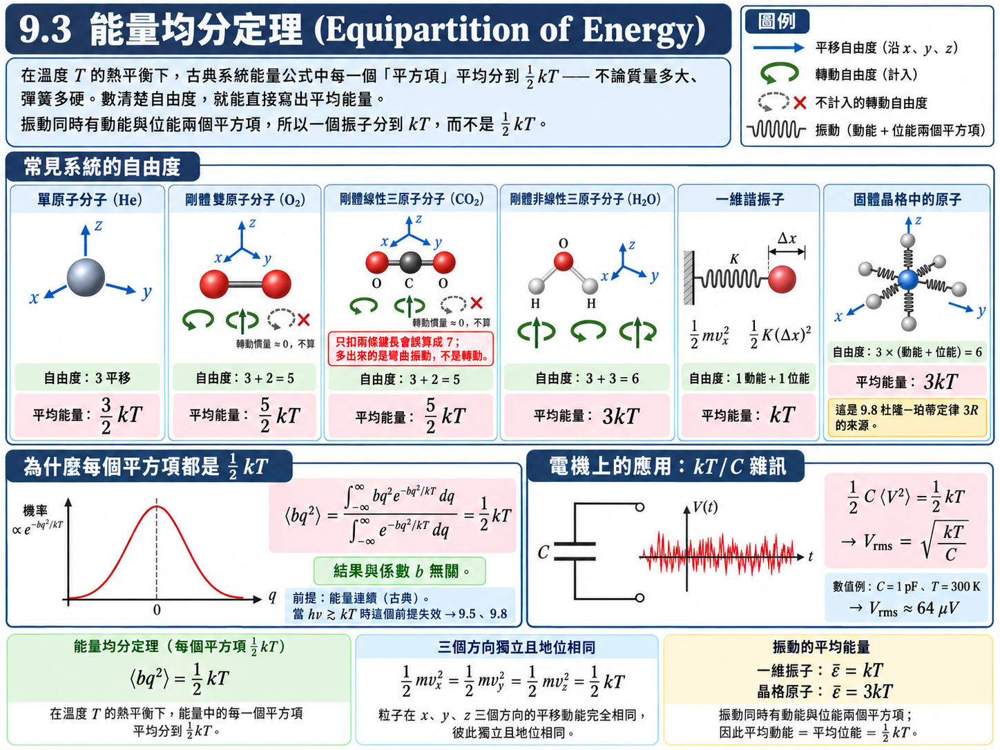
【物理知識回顧】 能量均分定理不只用在機械系統。對學電的人，最直接的應用是電路中的熱雜訊 (thermal noise)：一個電容器的能量 \(\frac{1}{2}CV^2\) 是電壓的平方項，所以在溫度 \(T\) 下它平均分到 \(\frac{1}{2}kT\)，對應的雜訊電壓 \(V_{\text{rms}} = \sqrt{kT/C}\)——\(1 \ \text{pF}\) 的電容在室溫下約 \(64 \ \mu\text{V}\)，這就是類比電路與取樣電路中常說的 \(kT/C\) 雜訊。
另外，均分定理是古典物理最後一塊「好用但終將出問題」的基石：\(9.5\) 的瑞利－金斯公式、\(9.8\) 的杜隆－珀蒂定律都直接用它，而兩者也都在同一個地方失敗——當能量量子 \(h\nu\) 不再遠小於 \(kT\) 時，「能量連續」的前提不成立，每個自由度就分不到 \(\frac{1}{2}kT\) 了。
9.4 量子統計學 (Quantum Statistics)#
前面使用可忽略量子交換效應的古典近似。本節保留全同粒子的交換對稱性，說明玻色與費米狀態的差別，再引用熱平衡下的量子分布。兩粒子波函數的例子只展示交換性質，不能單獨推出多粒子的熱平衡分布。
假設與已知 (Assumptions & Preliminaries)#
【已知 1】 線性與疊加原理 (Linearity and Superposition)： 薛丁格方程式是線性的；若 \(\psi_1\)、\(\psi_2\) 都是解，則任意線性組合 \(c_1\psi_1 + c_2\psi_2\) 也是解。
【已知 2】 可觀測的是機率密度 (Only \(|\psi|^2\) is observable)： 波函數本身不是可量測的物理量，能被量測的是機率密度 \(\psi^{*}\psi = |\psi|^2\)。
【假設 1】 兩個無交互作用的全同粒子 (Two non-interacting identical particles)： 粒子 \(1\)、\(2\) 分別處在單粒子態 \(a\) 或 \(b\)。記號 \(\psi_a(1)\) 表示「粒子 \(1\) 處在態 \(a\)」；兩粒子無交互作用時，系統波函數可寫成單粒子波函數的乘積。
\(\psi_a, \psi_b\) : 兩個彼此正交歸一的單粒子態 (Orthonormal single-particle states)
\(1, 2\) : 粒子的標號，代表各自的全部座標（位置與自旋）(Particle labels)
【假設 2】 交換對稱性 (Exchange symmetry)： 採通常三維空間的玻色／費米統計，取交換算符 \(P_{12}\) 的本徵態。由 \(P_{12}^2=1\)，本徵值為 \(\pm1\)；哪個符號適用，由自旋—統計關係決定（本課程引用，不證明）。機率密度相等本身不足以推出座標無關的正負號。
\[\begin{split}\psi\left( 2, 1 \right) = \begin{cases} +\psi\left( 1, 2 \right) & \text{波色子：整數自旋，對稱 (symmetric)} \\ -\psi\left( 1, 2 \right) & \text{費米子：半奇數自旋，反對稱 (antisymmetric)} \end{cases}\end{split}\]
推導：三種兩粒子波函數#
可分辨的古典粒子。 「粒子 \(1\) 在 \(a\)、粒子 \(2\) 在 \(b\)」與「粒子 \(2\) 在 \(a\)、粒子 \(1\) 在 \(b\)」是兩個不同的態——就像吳同學與陳同學交換座位是兩種不同的分布：
波色子。 由【已知 1】，\(\psi_{\text{I}}\) 與 \(\psi_{\text{II}}\) 的線性組合仍是解；由【假設 2】，必須取對稱的組合：
費米子。 取反對稱的組合：
\(\psi_B, \psi_F\) : 波色子、費米子的兩粒子波函數 (Two-particle wave functions)
\(\frac{1}{\sqrt{2}}\) : 歸一化因子（\(a \ne b\) 時，兩項彼此正交、各自歸一）
驗證交換性質：
\(\psi_F\) 雖然變號，但 \(|\psi_F|^2\) 不變，仍然符合不可分辨的要求。
推導：兩粒子同態時的歸一化與不相容原理#
計算目標： 判斷 \(a=b\) 時是否存在合法狀態。不能沿用只在 \(a\ne b\) 時成立的 \(1/\sqrt2\) 歸一化因子，再把未歸一化的平方解讀成機率。
對可分辨粒子，乘積態為
若 \(b=a\) 且 \(\psi_a\) 已歸一化，
對波色子，先寫未歸一化的對稱組合並重新求常數 \(C\)：
取 \(C=1/2\)，得到
對費米子，反對稱組合則恆為零：
零函數無法歸一化，因此兩個費米子不能佔據同一完整單粒子態。波色子則允許同態佔據。這裡得到的是允許或禁止的狀態條件，並沒有得到「同態機率一律是古典粒子的兩倍」；若要比較熱平衡佔據數，還須指定溫度、化學勢及統計系綜。
此處 \(d1,d2\) 表示對各粒子的空間座標積分並對離散自旋標籤求和。
三種分布函數#
上面的計算說明波色子允許同態佔據、費米子禁止同態佔據。以下引用獨立粒子熱平衡統計的結果；完整分布還需統計計數，不能僅由兩粒子波函數的振幅比較得到。
先把馬克士威爾－波茲曼分布改寫成「分母」的形式，並把歸一化常數記為 \(A \overset{\text{def}}{=} e^{-\alpha}\)：
兩種量子分布只是在這個分母上減一或加一：
\(f_{BE}(\epsilon)\) : 波色－愛因斯坦分布函數 (Bose–Einstein distribution function)，\([\text{無單位}]\)
\(f_{FD}(\epsilon)\) : 費米－迪拉克分布函數 (Fermi–Dirac distribution function)，\([\text{無單位}]\)
\(\alpha\) : 由系統特性決定的常數 (System-dependent constant)，\([\text{無單位}]\)，由歸一化條件（總粒子數 \(N\)）決定
把歸一化常數寫進指數裡（而不是像古典那樣放在前面當 \(A\)），數學上完全等價，好處是等一下可以把它改寫成一個有物理意義的能量。記憶的方式也很直接：
減一讓分母變小、\(f\) 變大——對應波色子「同態增強」，\(-1\) 代表機率的增加。
加一讓分母變大、\(f\) 變小——對應費米子「同態排斥」。而且 \(e^{\alpha}e^{\epsilon/kT} > 0\)，分母恆大於 \(1\)，所以 \(f_{FD}\) 永遠小於 \(1\)：每個態最多一個粒子，包立不相容原理已經寫在式子裡了。
【推導 1】 高能量時三者趨於一致 (High-energy limit)： 當 \(e^{\alpha}e^{\epsilon/kT} \gg 1\) 時，分母的 \(\pm 1\) 可以忽略：
\[\begin{split}\begin{gather*} f_{BE}, f_{FD} &\overset{\text{(9.26),(9.27)}}{=}& \frac{1}{e^{\alpha}e^{\epsilon/kT} \mp 1} \\ &\approx& \frac{1}{e^{\alpha}e^{\epsilon/kT}} \\ &=& f_{MB} \end{gather*}\end{split}\]物理意義：當每個態的平均佔據數遠小於 \(1\) 時，兩個粒子「撞進同一個態」的機會本來就極小，可分辨與否、要不要遵守不相容原理都無關緊要，量子統計退化為古典統計。這就是為什麼一般條件下的氣體分子可以用古典統計——分子的波函數幾乎不重疊，每個態幾乎都是空的。
比較條件： 以下曲線比較取相同 \(T\) 與 \(\alpha\)；若改成固定相同總粒子數，各統計的化學勢須分別求解，不能直接沿用同一 \(\alpha\)。
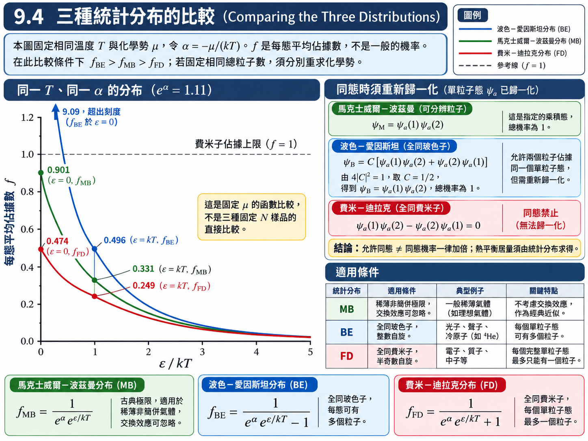
圖 9.5 以相同的 \(\alpha\)（\(e^{\alpha} \approx 1.11\)）畫出三種分布：在 \(\epsilon = 0\) 附近，\(f_{BE}\) 遠高於 \(f_{MB}\)、\(f_{FD}\) 明顯低於 \(f_{MB}\)；隨著能量增加，三條曲線依【推導 1】逐漸合而為一。
【進階探討：分母的 \(\pm 1\) 從哪裡來？】
也可引用粒子交換過程的量子統計因子與詳細平衡來理解分母：玻色模式的加入速率帶有 \(1+f\)，費米模式帶有 \(1-f\)。這些是額外引用的躍遷速率規則，不是前面未歸一化波函數的「兩倍」推廣。令 \(\alpha=-\mu/(kT)\)，熱平衡下可寫成：
三種分布因此是同一個波茲曼因子，配上三種不同的「入座規則」。
費米能量 (Fermi Energy)#
對學電的人而言，三種分布中最重要的是費米－迪拉克分布，因為它描述電子。把它的歸一化常數 \(\alpha\) 改寫成一個能量：
\(\epsilon_F\) : 本文沿用課本的費米能階記號，有限溫度時指化學勢 \(\mu(T)\)，單位 \([\mathrm J]\) 或 \([\mathrm{eV}]\)；零溫極限 \(\mu(0)\) 才是此電子氣的零溫費米能量。
代回 \((9.27)\)，兩個指數合併成一個：
數學上，\(\epsilon_F\) 仍然是歸一化常數，由系統的電子數 \(N\) 決定；但寫成這個形式之後，它的物理意義立刻浮現。
絕對零度的極限。 令 \(T \to 0\)，分兩種情形：
\(T\to0\) 時，\(f_{FD}\) 趨近步階函數；低於零溫費米能量的態填滿，高於它的態為空。對任意 \(T>0\)，皆有 \(f_{FD}(\epsilon=\mu(T))=1/2\)；但固定粒子數時 \(\mu\) 一般隨 \(T\) 改變，因此不同溫度曲線不必通過同一個固定能量座標。
有限溫度。 \(T > 0\) 時，步階的邊緣被「磨圓」：\(\epsilon_F\) 以下有少數態空出來，\(\epsilon_F\) 以上出現一條尾巴。這也符合熱力學的直覺：溫度夠高時，靠近 \(\epsilon_F\) 的電子有足夠的熱能跳到 \(\epsilon_F\) 以上。磨圓的寬度只有幾個 \(kT\)（例如 \(f\) 從 \(0.95\) 降到 \(0.05\) 的能量範圍是 \(2kT\ln 19 \approx 5.9\,kT\)）。圖 9.6 畫出 \(T = 0\)、\(T = 0.1\,\epsilon_F/k\)、\(T = \epsilon_F/k\) 三種情形：溫度高到 \(kT = \epsilon_F\) 時，步階幾乎被拉成一條斜線。
關鍵在於 \(\epsilon_F/k\) 有多大。\(9.9\) 會算出金屬的 \(\epsilon_F\) 約為數個 eV，對應的費米溫度 \(T_F \overset{\text{def}}{=} \epsilon_F/k\) 約為 \(10^4\) 到 \(10^5 \ \text{K}\)（銅約 \(8 \times 10^4 \ \text{K}\)）。因此即使到了上千 K，\(T/T_F\) 仍只有百分之一左右；室溫 \(300 \ \text{K}\) 對電子而言幾乎就是絕對零度，步階函數是非常好的一階近似。
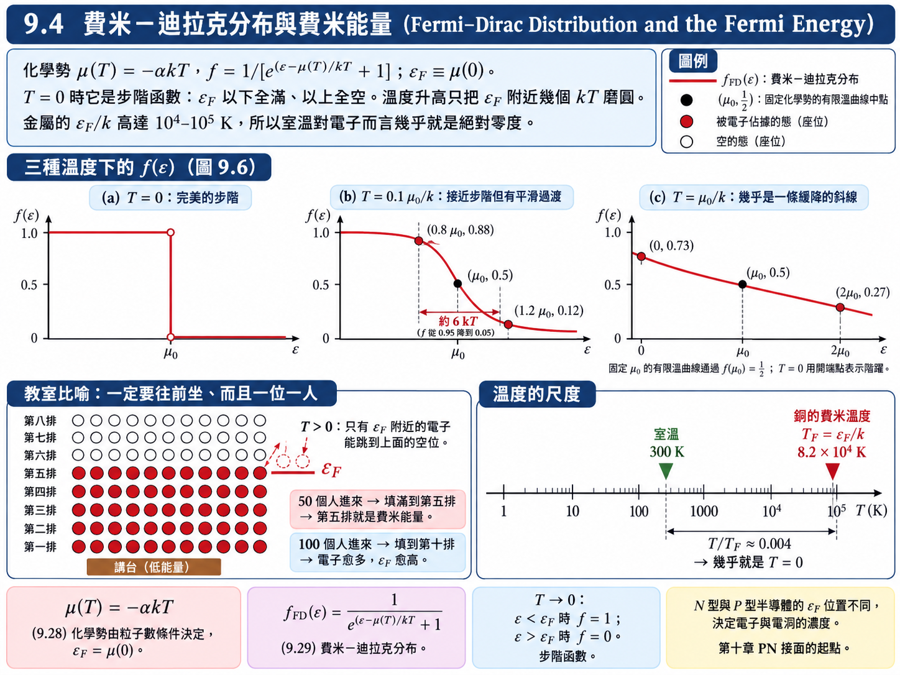
物理意義：教室的入座規則。 假設這門課的老師規定：「一定要往前坐，前面還有空位就必須先填滿。」這就是 \(T = 0\) 的費米－迪拉克分布——每張椅子最多一人（不相容原理），而且從能量最低的第一排開始填。若每排有 \(10\) 個位置、進來 \(50\) 個人，就剛好填滿到第五排；第五排就是費米能量。
對本章自由電子氣，在 \(T=0\) 時可由粒子數逐態填充求最高佔據能量；有限溫度時則由 \(N=\int g(\epsilon)f_{FD}(\epsilon;\mu,T)\,d\epsilon\) 決定 \(\mu(T)\)。有限溫度的分布有高能尾巴，不再有嚴格的最高佔據能量。
【物理知識回顧】 這條步階曲線，幾乎是學電的人在整門課中最重要的一張圖。第十章會看到：所有半導體元件的基本原理——N 型、P 型半導體、PN 接面——都建立在費米能階上。N 型與 P 型半導體的費米能階位置不同；兩者接觸、達成平衡時，費米能階必須拉平，於是在接面附近產生空乏區與內建電場，二極體與電晶體的特性就由此而來。
表 9.1 三種統計分布函數#
馬克士威爾－波茲曼 |
波色－愛因斯坦 |
費米－迪拉克 |
|
|---|---|---|---|
應用的系統 |
稀薄非簡併、交換效應可忽略的粒子 |
相同、不可分辨、不遵守不相容原理的粒子 |
相同、不可分辨、遵守不相容原理的粒子 |
粒子的分類 |
古典粒子 |
波色子 |
費米子 |
粒子特性 |
任何自旋；粒子相隔夠遠，波函數不重疊 |
自旋為 \(0, 1, 2, \dots\)；波函數對粒子交換為對稱 |
自旋為 \(\frac{1}{2}, \frac{3}{2}, \frac{5}{2}, \dots\)；波函數對粒子交換為反對稱 |
範例 |
氣體分子 |
空腔中的光子；固體中的聲子；低溫液態氦 |
金屬中的自由電子；白矮星中的電子 |
分布函數 |
\(f_{MB} = Ae^{-\epsilon/kT}\) |
\(f_{BE} = \dfrac{1}{e^{\alpha}e^{\epsilon/kT} - 1}\) |
\(f_{FD} = \dfrac{1}{e^{\left( \epsilon - \epsilon_F \right)/kT} + 1}\) |
分布特性 |
每個態的粒子數沒有限制 |
每個態的粒子數沒有限制；低能時比 \(f_{MB}\) 多，高能時趨近 \(f_{MB}\) |
每個態的粒子數不超過 \(1\)；低能時比 \(f_{MB}\) 少，高能時趨近 \(f_{MB}\) |
表中的聲子 (phonon) 值得一提。光子、聲子、電子這些「某某子」，都是某種東西量子化之後的單位：光子是電磁波的量子，聲子則是晶格振動的量子——第五章的諧振子能階是 \(\left( n + \frac{1}{2} \right)h\nu\)，每升一階多一份 \(h\nu\)，這一份就是一顆聲子。聲子是波色子，\(9.8\) 的固體比熱本質上就是在算聲子。
9.5 瑞利－金斯公式 (Rayleigh-Jeans Formula)#
第二章的黑體輻射只介紹了瑞利－金斯公式與普朗克公式的結論，並沒有交代它們是怎麼算出來的。有了統計的工具，現在可以回頭把這件事做完。
黑體的理想模型是一個開了小孔的空腔：腔壁與腔內的電磁輻射達成熱平衡，從小孔漏出來的就是黑體輻射。腔內的電磁波要穩定存在，必須形成駐波 (standing wave)。我們想求的是能量密度的頻譜 \(u(\nu)\,d\nu\)——每單位體積中、頻率介於 \(\nu\) 與 \(\nu + d\nu\) 的輻射能量。依照 \((9.1)\) 的精神，它等於
第二個因子就是一種 \(g\)。和 \(9.3\) 一樣，\(g(\nu)\) 無法直接數，所以先到一個「駐波均勻分布」的空間去數——這次是 \(j\) 空間。
假設與已知 (Assumptions & Preliminaries)#
【假設 1】 立方體空腔 (Cubical cavity)： 邊長為 \(L\) 的立方體空腔，腔壁為理想導體，腔內電磁輻射與腔壁在溫度 \(T\) 達成熱平衡；電場在腔壁上必須為節點，因此只能形成駐波。
【已知 1】 一維駐波條件 (Standing-wave condition in 1D)： 兩端固定、長度 \(L\) 的駐波，必須在 \(L\) 中容納整數個半波長。
\[L = j\frac{\lambda}{2}, \qquad j = 1, 2, 3, \dots\]\(j\) : 半波長的數目 (Number of half-wavelengths)，\([\text{無單位}]\)
【已知 2】 波向量 (Wave vector)： 三維平面波的波向量 \(\vec{k}\) 的大小與波長的關係，以及三個分量的平方和。
\[k = \frac{2\pi}{\lambda}, \qquad k^2 = k_x^2 + k_y^2 + k_z^2\]\(k\) : 波數 (Wave number)，\([\text{m}^{-1}]\)
【已知 3】 電磁波的色散關係 (Dispersion relation of light)： 真空中所有頻率的電磁波都以同一個速度 \(c\) 前進，因此頻率與波長互為反比；知道其中一個，另一個就決定了。
\[\nu\lambda = c\]\(\nu\) : 頻率 (Frequency)，\([\text{Hz}]\)
\(c\) : 光速 (Speed of light)，\([\text{m}\cdot\text{s}^{-1}]\)，\(c \approx 3.00 \times 10^{8} \ \text{m}\cdot\text{s}^{-1}\)
【已知 4】 能量均分定理 (Equipartition theorem)： \(9.3\) 的結果。每一個駐波模式就是一個一維振盪器（電場能與磁場能輪流交換，好比動能與位能），有兩個平方項，古典平均能量為
\[\overline{\epsilon} = kT\]【假設 2】 兩個偏振方向 (Two polarizations)： 電磁波是橫波，對每一組 \((j_x, j_y, j_z)\)，電場可以沿兩個互相垂直、且都垂直於傳播方向的方向振盪，故每個點代表兩個獨立的駐波。
【假設 3】 腔體遠大於波長 (Cavity much larger than the wavelength)： \(L \gg \lambda\)，因此 \(j\) 都是很大的數，\(j\) 空間中的格點極為密集，可以用「體積」來數點。
【推導 1】 三維駐波條件 (Standing-wave condition in 3D)： 三維駐波在 \(x\) 方向的投影必須在 \(L\) 中容納 \(j_x\) 個半波長，故 \(k_x = \pi j_x/L\)；\(y\)、\(z\) 方向同理。
\[j_x = \frac{2L}{\lambda_x}, \qquad j_y = \frac{2L}{\lambda_y}, \qquad j_z = \frac{2L}{\lambda_z} \tag{9.30}\]\(\lambda_x, \lambda_y, \lambda_z\) : 駐波圖樣在三個方向的空間週期 (Spatial periods along the three axes)，\(\lambda_x = 2\pi/k_x\)，\([\text{m}]\)
\(j_x, j_y, j_z\) : 沿三個方向的半波長數目 (Numbers of half-wavelengths along each axis)，非負整數，\([\text{無單位}]\)
把三個分量代入【已知 2】：
\[\begin{split}\begin{gather*} \left( \frac{2\pi}{\lambda} \right)^2 &\overset{\text{已知 2}}{=}& k_x^2 + k_y^2 + k_z^2 \\ \left( \frac{2\pi}{\lambda} \right)^2 &\overset{\text{(9.30)}}{=}& \left( \frac{\pi j_x}{L} \right)^2 + \left( \frac{\pi j_y}{L} \right)^2 + \left( \frac{\pi j_z}{L} \right)^2 \\ j_x^2 + j_y^2 + j_z^2 &=& \left( \frac{2L}{\lambda} \right)^2 \end{gather*}\end{split}\]\[j_x^2 + j_y^2 + j_z^2 = \left( \frac{2L}{\lambda} \right)^2, \qquad j_x, j_y, j_z = 0, 1, 2, \dots \tag{9.31}\]
推導：\(j\) 空間中的駐波數#
以 \(j_x\)、\(j_y\)、\(j_z\) 為座標軸建立一個三維空間，每一組允許的整數 \((j_x, j_y, j_z)\) 就是空間中的一個格點，格點均勻分布，每單位體積恰有一個——這就是 \(j\) 空間的好處，和 \(9.3\) 的動量空間完全同一個想法。定義格點到原點的距離
\(j\) : \(j\) 空間中的「半徑」(Radius in \(j\)-space)，由 \((9.31)\) 知 \(j = 2L/\lambda\)，\([\text{無單位}]\)
由【假設 3】，介於 \(j\) 與 \(j + dj\) 之間的格點數，等於該球殼的體積，再做兩個修正：
乘 \(\frac{1}{8}\)：\(j_x, j_y, j_z\) 都不能是負的，只有第一卦限的八分之一球殼算數。
乘 \(2\)：由【假設 2】，每個格點有兩個偏振方向。
\(g(j)\,dj\) : \(j\) 介於 \(j\) 與 \(j + dj\) 之間的駐波數 (Number of standing waves between \(j\) and \(j + dj\))，\([\text{無單位}]\)
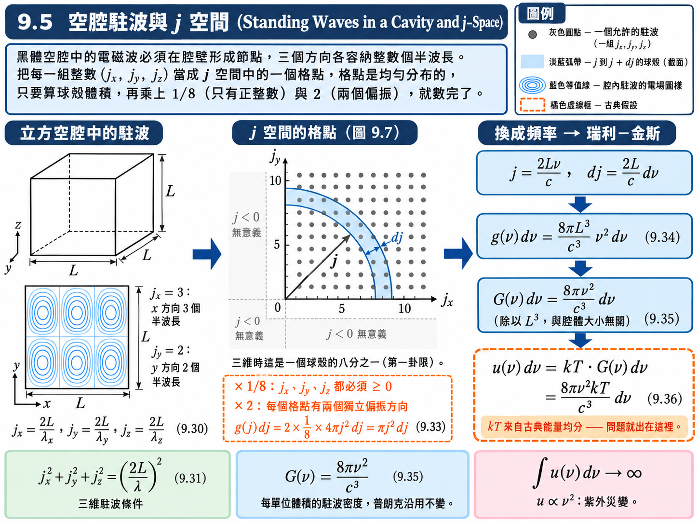
推導：換成頻率#
和 \(9.3\) 一樣，現在只剩一步變數變換：找出 \(j\) 與 \(\nu\) 的關係，把 \(j\) 與 \(dj\) 全部換掉。
腔體大小不同，駐波總數當然不同，拿來比較沒有意義；真正有意義的是每單位體積的駐波數。空腔體積為 \(L^3\)，除掉之後 \(L\) 完全消失：
\(G(\nu)\,d\nu\) : 空腔中每單位體積、頻率介於 \(\nu\) 與 \(\nu + d\nu\) 之間的駐波數 (Density of standing waves)，\([\text{m}^{-3}]\)
推導：瑞利－金斯公式#
由【已知 4】，古典物理認為每一個駐波（不論頻率高低）的平均能量都是 \(kT\)：
\(u(\nu)\,d\nu\) : 每單位體積、頻率介於 \(\nu\) 與 \(\nu + d\nu\) 的輻射能量 (Spectral energy density)，\([\text{J}\cdot\text{m}^{-3}]\)
這就是瑞利－金斯公式。
【物理知識回顧】 \((9.36)\) 在低頻與實驗吻合，但它正比於 \(\nu^2\)、隨頻率無限制地上升；把所有頻率積分起來，總能量密度 \(\int_0^\infty u\,d\nu\) 發散到無窮大。這就是第二章說的紫外災變 (ultraviolet catastrophe)。
問題出在哪裡？不是駐波的計數——\((9.35)\) 完全正確，下一節普朗克會原封不動地沿用它。問題在每個駐波分到 \(kT\)：古典的能量均分讓每個模式不論頻率高低都分到同樣的能量，而高頻的模式有無窮多個（\(G \propto \nu^2\)），於是總能量爆掉。要修正的只有「平均能量」這一個因子。
9.6 普朗克輻射定律 (Planck Radiation Law)#
普朗克的修正只動了一個地方：振盪器的能量不是連續的。
假設與已知 (Assumptions & Preliminaries)#
【已知 1】 \((9.35)\) 駐波密度： \(9.5\) 的結果，完全沿用。
\[G\left( \nu \right)d\nu = \frac{8\pi\nu^2}{c^3}d\nu\]【假設 1】 普朗克的能量量子化 (Planck’s quantization)： 頻率為 \(\nu\) 的振盪器，能量只能是 \(h\nu\) 的整數倍。
\[\epsilon_n = nh\nu, \qquad n = 0, 1, 2, \dots\]\(h\) : 普朗克常數 (Planck constant)，\([\text{J}\cdot\text{s}]\)，\(h \approx 6.626 \times 10^{-34} \ \text{J}\cdot\text{s}\)
\(n\) : 能量量子數 (Quantum number)，\([\text{無單位}]\)
【已知 2】 波茲曼因子 \((9.2)\)： 振盪器處在能量 \(\epsilon_n\) 的機率正比於 \(e^{-\epsilon_n/kT}\)。（投影片此處將 \(\epsilon_n\) 誤植為 \(\epsilon_F\)；這裡還沒有費米能量的概念。）
【已知 3】 幾何級數 (Geometric series)： 適用於 \(|y| < 1\)；第二式由第一式對 \(y\) 微分再乘 \(y\) 得到。
\[\sum_{n=0}^{\infty}y^n = \frac{1}{1-y}, \qquad \sum_{n=0}^{\infty}n\,y^n = \frac{y}{\left( 1-y \right)^2}\]【已知 4】 普朗克型定積分 (Bose-type integrals)： \(\zeta\) 為黎曼 zeta 函數。
(a) \(\displaystyle\int_0^\infty \frac{x^2}{e^x - 1}dx = 2\zeta\left( 3 \right) \approx 2.404\)
(b) \(\displaystyle\int_0^\infty \frac{x^3}{e^x - 1}dx = \frac{\pi^4}{15} \approx 6.494\)
【推導 1】 從能量密度到輻射率 (From energy density to radiance)： 輻射率 \(R\) 是黑體表面每單位面積、每秒向外發出的總能量。空腔內輻射等向分布，總能量密度為 \(U\)；朝立體角 \(d\Omega\) 方向運動的能量佔 \(\frac{d\Omega}{4\pi}\)，以速率 \(c\) 斜向穿過小孔時有效面積要乘 \(\cos\theta\)。對朝外的半球積分：
\[\begin{split}\begin{gather*} R &=& \int_{\text{半球}} cU\cos\theta\,\frac{d\Omega}{4\pi} \\ &=& \frac{cU}{4\pi}\int_0^{2\pi}\!\!\int_0^{\pi/2}\cos\theta\sin\theta\,d\theta\,d\phi \\ &=& \frac{cU}{4\pi}\left( 2\pi \right)\left( \frac{1}{2} \right) \\ &=& \frac{c}{4}U \end{gather*}\end{split}\]\(R\) : 輻射率 (Radiance, emitted power per unit area)，\([\text{W}\cdot\text{m}^{-2}]\)
\(U\) : 總能量密度 (Total energy density)，\(U = \int_0^\infty u(\nu)\,d\nu\)，\([\text{J}\cdot\text{m}^{-3}]\)
推導：振盪器的平均能量#
把每個可能的能量乘上它出現的機率，加總起來再除以總機率。令 \(x \overset{\text{def}}{=} h\nu/kT\)、\(y \overset{\text{def}}{=} e^{-x} < 1\)：
\(\overline{\epsilon}\) : 頻率為 \(\nu\) 的振盪器（駐波模式）的平均能量 (Average energy per oscillator)，\([\text{J}]\)
推導：普朗克輻射公式#
駐波的計數不變，只把每個駐波的平均能量從 \(kT\) 換成 \((9.37)\)：
這就是第二章的普朗克輻射公式，與黑體輻射的實驗曲線完全吻合。
兩個極限：
低頻 \(h\nu \ll kT\)： \(e^{h\nu/kT} \approx 1 + \frac{h\nu}{kT}\)，故 \(\overline{\epsilon} \approx kT\)，\((9.38)\) 退化成瑞利－金斯公式 \((9.36)\)。能量量子 \(h\nu\) 比熱能小得多時，能量的顆粒感消失，古典結果成立——這是對應原理 (correspondence principle) 的又一個例子。
高頻 \(h\nu \gg kT\)： \(\overline{\epsilon} \approx h\nu\,e^{-h\nu/kT} \to 0\)。一個量子 \(h\nu\) 的「門檻」遠高於熱能，振盪器幾乎都停在 \(n = 0\)，高頻模式被指數地凍結 (frozen out)，紫外災變因此消失。
第二章曾提到普朗克自稱這是一個「幸運的猜測 (lucky guess)」。回頭看，這其實是謙辭：他仍然使用古典的波茲曼統計，只改動了「能量可以連續」這一個前提，背後有清楚的物理內涵。
光子的分布函數。 把 \((9.37)\) 拆成 \(h\nu \times\)（某個數），那個數就是「頻率 \(\nu\) 的模式中平均有幾顆光子」：
\(f(\nu)\) : 光子分布函數 (Photon distribution function)，即頻率 \(\nu\) 的模式中的平均光子數，\([\text{無單位}]\)
比較 \((9.26)\)：這正是 \(\alpha = 0\) 的波色－愛因斯坦分布（光子是自旋 \(1\) 的波色子）。為什麼 \(\alpha = 0\)？\(\alpha\) 是用來固定總粒子數的歸一化常數，但腔壁可以隨時吸收、放出光子，光子數不守恆，沒有任何條件需要 \(\alpha\) 來滿足，所以它為零。換句話說，普朗克當年以「振盪器 \(+\) 波茲曼統計」得到的結果，和把光子當作 \(\alpha = 0\) 的波色子氣體得到的結果完全相同。
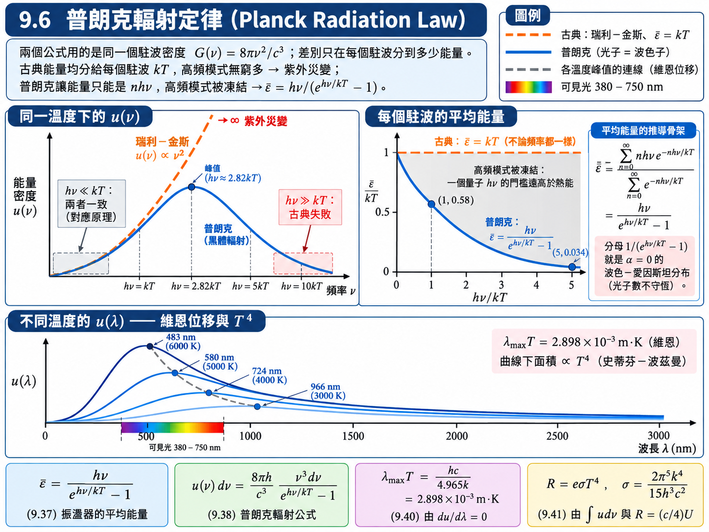
推導：維恩位移定律#
實驗上量測的常是波長頻譜，因此先把 \((9.38)\) 改寫成 \(u(\lambda)\)。同一個能量區間，用頻率或波長來標記都必須給出同樣的能量：\(u(\lambda)|d\lambda| = u(\nu)|d\nu|\)，其中 \(\nu = c/\lambda\)、\(|d\nu| = \frac{c}{\lambda^2}|d\lambda|\)：
令 \(x \overset{\text{def}}{=} \dfrac{hc}{\lambda kT}\)。固定 \(T\) 時 \(u(\lambda) = \dfrac{8\pi (kT)^5}{(hc)^4}\cdot\dfrac{x^5}{e^x - 1}\)，而 \(\lambda\) 與 \(x\) 一一對應，故 \(\dfrac{du}{d\lambda} = 0\) 等價於對 \(x\) 求極值：
（最後一行是超越方程式，以數值求解。）換回 \(\lambda\)：
\(\lambda_{\max}\) : 能量密度最大處的波長 (Wavelength of maximum energy density)，\([\text{m}]\)
這就是維恩位移定律 (Wien’s displacement law)：\(\lambda_{\max}\) 與 \(T\) 成反比。溫度愈高，峰值波長愈短——不論是恆星還是燈絲，愈熱的物體看起來愈偏藍、紫，愈冷的愈偏紅、紅外。
推導：史蒂芬－波茲曼定律#
把所有頻率的能量密度加起來。令 \(x = h\nu/kT\)，則 \(\nu = \frac{kT}{h}x\)、\(d\nu = \frac{kT}{h}dx\)：
定義 \(\sigma \overset{\text{def}}{=} \dfrac{2\pi^5k^4}{15h^3c^2} \approx 5.670 \times 10^{-8} \ \text{W}\cdot\text{m}^{-2}\cdot\text{K}^{-4}\)，並把非理想黑體的放射率 \(e\) 放進來：
\(R\) : 輻射率，每單位面積的總放射功率 (Radiance)，\([\text{W}\cdot\text{m}^{-2}]\)
\(\sigma\) : 史蒂芬－波茲曼常數 (Stefan–Boltzmann constant)，\([\text{W}\cdot\text{m}^{-2}\cdot\text{K}^{-4}]\)
\(e\) : 放射率 (Emissivity)，\(0 \le e \le 1\)，理想黑體 \(e = 1\)，\([\text{無單位}]\)
順帶一提，總能量密度也常寫成 \(U = aT^4\)，其中 \(a = \dfrac{4\sigma}{c} \approx 7.566 \times 10^{-16} \ \text{J}\cdot\text{m}^{-3}\cdot\text{K}^{-4}\)（投影片例題 9.5 把這個常數印成 \(\alpha\)，與 \(9.4\) 的 \(\alpha\) 無關）。
【物理知識回顧】 維恩定律與史蒂芬－波茲曼定律在第二章是兩條獨立的經驗定律；有了普朗克公式，它們只是同一條曲線的兩個性質：峰值位置（微分等於零）與曲線下的面積（積分）。\(T^4\) 的來源也很清楚：\(\nu^3\) 的分子加上 \(d\nu\) 共四個 \(\nu\)，換成 \(x = h\nu/kT\) 時一次帶出 \(T^4\)。
要注意，\(u(\lambda)\) 的峰值與 \(u(\nu)\) 的峰值不是同一個光子：對頻率求極值得到的是 \(h\nu_{\max} \approx 2.821\,kT\)，而 \(c/\nu_{\max} \ne \lambda_{\max}\)。原因是 \(d\lambda\) 與 \(d\nu\) 的換算因子 \(c/\lambda^2\) 本身隨波長變化，把曲線的形狀扭曲了。
例題 9.5：1000 K 的空腔中有多少光子#
題目： 在 \(1000 \ \text{K}\) 的熱平衡狀況下，\(1.00 \ \text{cm}^3\) 的輻射中有多少個光子？其平均能量為何？
解答：
(a) 頻率在 \(d\nu\) 內的能量是 \(u(\nu)\,d\nu\)，每顆光子的能量是 \(h\nu\)，故單位體積的光子數為 \(n(\nu)\,d\nu = u(\nu)\,d\nu/h\nu\)。體積 \(V\) 中的光子總數：
代入 \(T = 1000 \ \text{K}\)、\(V = 1.00 \ \text{cm}^3 = 1.00 \times 10^{-6} \ \text{m}^3\)：
(b) 平均能量 \(=\) 單位體積的總能量 \(\div\) 單位體積的光子數：
【物理知識回顧】 化簡後的平均能量正比於 \(T\)：\(\overline{\epsilon} = \dfrac{\pi^4}{30\zeta(3)}kT \approx 2.70\,kT\)（\(1000 \ \text{K}\) 時 \(kT = 0.0862 \ \text{eV}\)，乘上 \(2.70\) 正好是 \(0.233 \ \text{eV}\)）。這和直覺相符：熱輻射中「典型」光子的能量就是幾個 \(kT\)。另外，光子數密度正比於 \(T^3\)、總能量密度正比於 \(T^4\)，兩者相除自然得到 \(T^1\)。
例題 9.6：宇宙微波背景輻射#
題目： 大爆炸所發出的輻射，由於宇宙的擴張而產生都卜勒移動，移往較長的波長；今日的光譜對應到溫度 \(2.7 \ \text{K}\) 的黑體。求此輻射能量密度最大時的波長，並判斷它位於光譜的哪個區域。
解答：
此波長位於微波區（接近現在常說的毫米波），這個輻射是 1964 年在天空的微波量測中首次被偵測到的。
【物理知識回顧】 大爆炸理論的主要證據之一是紅位移：遙遠星系的光譜都往長波長方向移動，表示它們都在遠離我們，整個宇宙在膨脹。宇宙早期極熱的輻射隨著空間膨脹被「拉長」，今日冷卻成約 \(3 \ \text{K}\) 的黑體輻射，充滿整個天空。這是普朗克公式在宇宙尺度上的驗證。
例題 9.7：太陽的表面溫度#
題目： 太陽直射時以 \(1.4 \ \text{kW}/\text{m}^2\) 的功率密度到達地球。地球軌道的平均半徑為 \(1.5 \times 10^{11} \ \text{m}\)，太陽半徑為 \(7.0 \times 10^{8} \ \text{m}\)。假設太陽輻射近似黑體，試由這些數據求出太陽表面的溫度。
解答：
太陽的總放射功率。 以太陽為中心、地球軌道半徑 \(r_e\) 為半徑的球殼，每單位面積接收 \(P/A = 1.4 \ \text{kW}/\text{m}^2\)，因此太陽的總功率等於這個功率密度乘上整個球殼的面積 \(4\pi r_e^2\)：
太陽表面的輻射率。 太陽半徑為 \(r_s\)，表面積為 \(4\pi r_s^2\)：
由史蒂芬－波茲曼定律反求溫度（黑體 \(e = 1\)）：
【物理知識回顧】 「太陽表面約 \(6000 \ \text{K}\)」不是猜出來的，而是這樣推算出來的：在無雲時量測地表接收的太陽功率密度，配合地球軌道半徑與太陽半徑，再用史蒂芬－波茲曼定律反推。由維恩定律，\(5800 \ \text{K}\) 的黑體峰值約在 \(500 \ \text{nm}\)，恰好落在可見光的正中央。
地球的能量收支與溫室效應#
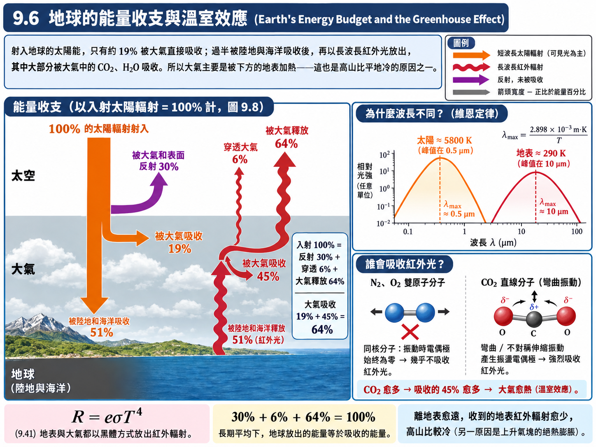
黑體輻射也能回答一個從小就讓人困惑的問題：高山離太陽比較近，為什麼反而比較冷？
答案是：大氣的熱量主要不是直接來自太陽。依圖 9.8 的能量收支，射入地球的太陽輻射（以 \(100\%\) 計）：
約 \(30\%\) 被大氣與地表直接反射回太空；
約 \(51\%\) 被陸地與海洋吸收；
只有約 \(19\%\) 被大氣直接吸收。
陸地與海洋吸收的能量不可能無限累積，必須重新放出。地表溫度約 \(300 \ \text{K}\)，依維恩定律其輻射峰值約在 \(10 \ \mu\text{m}\)，是長波長的紅外光——與射入的短波長可見光完全不同。這 \(51\%\) 之中，約 \(45\%\) 被大氣重新吸收，只有約 \(6\%\) 直接穿透到太空。因此大氣主要是被底下的地表加熱，而不是被上面的太陽加熱；離地表愈遠，接收到的地表紅外輻射愈少，溫度愈低。最後，大氣再以約 \(64\%\) 的份額輻射回太空（\(19\% + 45\% = 64\%\)），地球與大氣輻射至太空的總能量平均等於從太陽吸收的總能量（\(30\% + 6\% + 64\% = 100\%\)）。
溫室效應 (greenhouse effect) 的關鍵就在那 \(45\%\)：大氣吸收地表紅外輻射的能力愈強，大氣就愈熱。大氣中的 N\(_2\)、O\(_2\) 是同核雙原子分子，振動時電偶極矩始終為零，幾乎不吸收紅外光；CO\(_2\) 與 H\(_2\)O 則不同——CO\(_2\) 雖然整體沒有永久電偶極，但它的彎曲與不對稱伸縮振動會產生振盪的電偶極，很容易與紅外電磁波交換能量（這與第六章「振盪電偶極會放光、也會吸光」是同一件事）。因此大氣中 CO\(_2\) 愈多，吸收的地表紅外輻射愈多，整層大氣的溫度就愈高。
（補充：對流層溫度隨高度遞減，另一個重要原因是上升氣塊因氣壓降低而絕熱膨脹降溫；「由下往上加熱」與「絕熱膨脹」兩者共同決定了實際的溫度遞減率。）
9.7 愛因斯坦的處理方法 (Einstein’s Approach)#
第四章介紹雷射時提過，雷射的核心機制——受激放射 (stimulated emission)——是愛因斯坦在 1917 年預測出來的。當時只講了概念，沒有說明吸收與放射的速率由什麼決定。有了統計的工具，我們可以重走一次愛因斯坦的推論：只用「熱平衡」與「普朗克公式」兩個條件，就能把三種躍遷的係數關係完全鎖定。
考慮原子的兩個能階 \(E_i < E_j\)。由第六章的輻射躍遷，兩能階之間吸收或放出的光子頻率為
\(E_i, E_j\) : 下能階與上能階的能量 (Energies of the lower and upper levels)，\([\text{J}]\)
假設與已知 (Assumptions & Preliminaries)#
【假設 1】 三種躍遷過程 (Three transition processes)： 每秒發生各種躍遷的原子數，正比於「出發能階上的原子數」；需要光子誘發的過程，還正比於「該頻率的輻射能量密度」。
(a) 受激吸收 (Induced absorption)：\(i \to j\)，必須有光子進來，不存在「自發吸收」。每秒發生數為 \(N_i B_{ij} u(\nu)\)。
(b) 自發放射 (Spontaneous emission)：\(j \to i\)，不需要任何外來光子，光子朝任意方向放出。每秒發生數為 \(N_j A_{ji}\)。
(c) 受激放射 (Induced / stimulated emission)：\(j \to i\)，由一個入射光子誘發，放出的光子與入射光子同頻率、同方向、同相位。每秒發生數為 \(N_j B_{ji} u(\nu)\)。
\(N_i, N_j\) : 處在能階 \(i\)、\(j\) 的原子數 (Populations of levels \(i\), \(j\))，\([\text{無單位}]\)
\(u(\nu)\) : 頻率 \(\nu\) 的輻射能量密度 (Spectral energy density)，\([\text{J}\cdot\text{s}\cdot\text{m}^{-3}]\)
\(A_{ji}\) : 自發放射係數 (Spontaneous-emission coefficient)，\([\text{s}^{-1}]\)
\(B_{ij}, B_{ji}\) : 受激吸收、受激放射係數 (Induced absorption / emission coefficients)，\([\text{m}^{3}\cdot\text{J}^{-1}\cdot\text{s}^{-2}]\)
命名規則：\(A\) 代表自發、\(B\) 代表受激；下標 \(ij\) 代表「從 \(i\) 到 \(j\)」，\(ji\) 代表「從 \(j\) 到 \(i\)」。
【假設 2】 熱平衡 (Thermal equilibrium)： 原子與輻射在溫度 \(T\) 下達成平衡，兩個能階上的原子數都不隨時間改變，因此每秒向上躍遷的數目必須等於每秒向下躍遷的數目。
\[N_{i \to j} = N_{j \to i}\]【已知 1】 馬克士威爾－波茲曼分布 \((9.3)\)： 在稀薄非簡併、熱平衡近似下，能階上的原子數 \(N = Ce^{-E/kT}\)。此處假設兩個能階的統計權重相同（\(g_i = g_j\)），比值中 \(C\) 與 \(g\) 都消掉。
\[\frac{N_i}{N_j} = e^{-\left( E_i - E_j \right)/kT}\]【已知 2】 普朗克輻射公式 \((9.38)\)： 與物質達成熱平衡的輻射，其能量密度必定是黑體輻射。
\[u\left( \nu \right) = \frac{8\pi h\nu^3}{c^3}\frac{1}{e^{h\nu/kT} - 1}\]
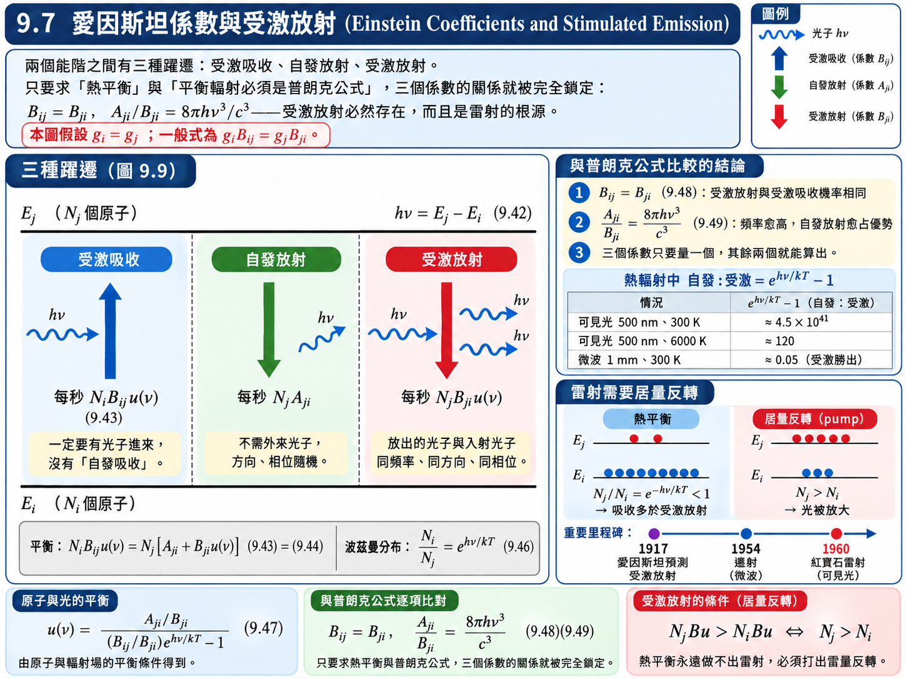
推導：平衡條件下的輻射能量密度#
向上躍遷只有受激吸收一種途徑：
向下躍遷有自發與受激兩種途徑，要加起來：
由【假設 2】令兩者相等，目標是把 \(u(\nu)\) 解出來。先兩邊同除以 \(N_jB_{ji}\)：
兩能階的原子數比由【已知 1】給出：
代回 \((9.45)\)：
係數比較的前提： 本節已取 \(g_i=g_j\)，所以後面得到 \(B_{ij}=B_{ji}\)。若能階簡併數不同，應保留 \(N_j/N_i=(g_j/g_i)e^{-h\nu/kT}\)，結果改為 \(g_iB_{ij}=g_jB_{ji}\)；\(A_{ji}/B_{ji}\) 的頻率關係不變。
推導：與普朗克公式比較#
\((9.47)\) 是「原子與光的交互作用」所要求的輻射；【已知 2】是黑體輻射的實驗事實。兩者描述的是同一件事——黑體輻射本來就來自物質與電磁波的交互作用——因此對所有溫度都必須相等。令 \(x \overset{\text{def}}{=} h\nu/kT\)，交叉相乘：
這個等式要對所有 \(x\)（所有溫度）成立，\(e^x\) 的係數與常數項必須分別相等。常數項給出 \(\dfrac{A_{ji}}{B_{ji}} = \dfrac{8\pi h\nu^3}{c^3}\)；把它代入 \(e^x\) 的係數，就得到 \(\dfrac{B_{ij}}{B_{ji}} = 1\)：
三個結論#
(1) 受激放射確實存在，而且機率與受激吸收相同。 \((9.48)\) 說同樣是「受激」，吸收與放射的係數完全相等。反過來看，若沒有受激放射（\(B_{ji} = 0\)），\((9.44)\) 只剩自發放射，平衡條件會給出 \(u(\nu) = \dfrac{A_{ji}}{B_{ij}}e^{-h\nu/kT}\)——這只是普朗克公式在高頻的近似，低頻完全錯誤。愛因斯坦正是由此斷定：要得到普朗克公式，非得有受激放射不可。
(2) 自發放射與受激放射的係數比正比於 \(\nu^3\)。 頻率愈高，自發放射愈占優勢；頻率愈低，受激放射愈有機會勝出。對做雷射的人來說，這代表短波長的雷射比較難做。歷史上最先實現的是微波波段的邁射 (maser，1954 年)，接著才是可見光的紅寶石雷射 (1960 年)；X 光雷射至今仍然困難得多。
(3) 三個係數只需要量一個。 有了 \((9.48)\) 與 \((9.49)\)，只要由實驗測得 \(A_{ji}\)、\(B_{ij}\)、\(B_{ji}\) 其中之一，其餘兩個就能直接算出來。
愛因斯坦在 1917 年就得到這些結論，比第一台雷射早了四十多年。
【物理知識回顧】 雷射要放大光，受激放射必須多過吸收。由 \((9.48)\)，兩者的係數相同，所以比較的只剩原子數：
要放大就必須 \(N_j > N_i\)，也就是居量反轉 (population inversion)。但由 \((9.46)\)，熱平衡下 \(N_j/N_i = e^{-h\nu/kT} < 1\) 恆成立——熱平衡永遠不可能產生雷射，必須用外加的能量「打」(pump) 出非平衡的居量反轉，這就是第四章介紹的三能階、四能階雷射設計的出發點。
補充例題：熱輻射中自發放射與受激放射的比例#
題目： 在溫度 \(T\) 的黑體輻射中，原子自發放射與受激放射的速率比為何？分別估算 (a) \(\lambda = 500 \ \text{nm}\)、\(T = 300 \ \text{K}\)；(b) \(\lambda = 500 \ \text{nm}\)、\(T = 6000 \ \text{K}\)；(c) \(\lambda = 1 \ \text{mm}\)、\(T = 300 \ \text{K}\) 的情形。
解答：
以 \(h\nu/kT = hc/\lambda kT\) 代入：
情形 |
\(h\nu/kT\) |
自發 \(:\) 受激 |
|---|---|---|
(a) \(500 \ \text{nm}\)，\(300 \ \text{K}\) |
\(95.9\) |
\(\approx 4.5 \times 10^{41}\) |
(b) \(500 \ \text{nm}\)，\(6000 \ \text{K}\) |
\(4.80\) |
\(\approx 120\) |
(c) \(1 \ \text{mm}\)，\(300 \ \text{K}\) |
\(0.048\) |
\(\approx 0.049\) |
【物理知識回顧】 可見光在室溫下，受激放射比自發放射少了四十幾個數量級；即使在太陽表面，自發放射仍多了上百倍。日常生活中的光源（燈泡、陽光）因此幾乎全是自發放射，光子方向、相位雜亂無章。反之，在微波波段受激放射反而比自發放射多了約 \(20\) 倍——這正是 \(\nu^3\) 定律的具體展現，也解釋了為什麼邁射比雷射先問世。
9.8 固體的比熱 (Specific Heats of Solids)#
國中、高中學過杜隆－珀蒂定律 (Dulong–Petit law)：固體的莫耳比熱大約是 \(3R\)。本節先用能量均分定理把它推出來，再看它為什麼在低溫失敗，最後用與普朗克完全相同的手法修正它。
固體的熱能主要來自晶格振動：每個原子都在自己的平衡位置附近振動，溫度愈高振動愈劇烈。和氣體分子不一樣的是，雙原子氣體分子只能沿著鍵軸方向振動；固體中的原子上下左右前後都有鄰居，\(x\)、\(y\)、\(z\) 三個方向都有鍵結，因此三個方向都能振動。
假設與已知 (Assumptions & Preliminaries)#
【假設 1】 每個原子是三個獨立的一維振盪器 (Each atom = three independent 1D oscillators)： 晶格中的原子在 \(x\)、\(y\)、\(z\) 三個方向各自做簡諧振動，彼此獨立；並且（愛因斯坦模型）所有振盪器的頻率都是同一個 \(\nu\)。
\(\nu\) : 晶格振盪器的頻率 (Oscillator frequency)，\([\text{Hz}]\)
【已知 1】 能量均分定理： \(9.3\) 的結果。一維諧振子有動能與位能兩個平方項，古典平均能量為 \(kT\)。
【已知 2】 氣體常數 (Gas constant)： 一個 kmol 含 \(N_0\) 個原子，\(N_0k\) 就是氣體常數——也就是 \(PV = nRT\) 裡的那個 \(R\)。
\[R = N_0k\]\(N_0\) : 亞佛加厥數 (Avogadro’s number)，\([\text{kmol}^{-1}]\)，\(N_0 \approx 6.022 \times 10^{26} \ \text{kmol}^{-1}\)
\(R\) : 氣體常數 (Gas constant)，\([\text{J}\cdot\text{kmol}^{-1}\cdot\text{K}^{-1}]\)，\(R \approx 8.314 \times 10^{3} \ \text{J}\cdot\text{kmol}^{-1}\cdot\text{K}^{-1} \approx 1.986 \ \text{kcal}\cdot\text{kmol}^{-1}\cdot\text{K}^{-1}\)
【定義 1】 等容莫耳比熱 (Molar heat capacity at constant volume)： 固定體積時，每 kmol 物質的內能對溫度之導數。本節採 kmol 為物質的量單位。固體也有定壓比熱，與等容比熱並不完全相同；本模型先忽略熱膨脹所造成的差異。
\[c_V \overset{\text{def}}{=} \left( \frac{\partial E}{\partial T} \right)_V\]\(E\) : 每 kmol 固體的內能 (Internal energy per kmol)，\([\text{J}\cdot\text{kmol}^{-1}]\)
\(c_V\) : 等容莫耳比熱 (Molar specific heat at constant volume)，\([\text{J}\cdot\text{kmol}^{-1}\cdot\text{K}^{-1}]\) 或 \([\text{kcal}\cdot\text{kmol}^{-1}\cdot\text{K}^{-1}]\)
【已知 3】 量子振盪器的平均能量 \((9.37)\)： \(9.6\) 的結果。晶格振盪器的能量同樣是量子化的——第五章的諧振子能階是 \(\left( n + \frac{1}{2} \right)h\nu\)；零點能 \(\frac{1}{2}h\nu\) 只是一個與溫度無關的常數，對比熱沒有貢獻，因此可以直接沿用普朗克的結果。
\[\overline{\epsilon} = \frac{h\nu}{e^{h\nu/kT} - 1}\]【已知 4】 指數的一階近似 (First-order approximation of the exponential)： 適用於 \(|x| \ll 1\)。
\[e^{x} \approx 1 + x\]
推導：杜隆－珀蒂定律（古典）#
一 kmol 固體有 \(N_0\) 個原子，由【假設 1】共 \(3N_0\) 個振盪器，每個由【已知 1】分到 \(kT\)：
（換成 SI 單位約為 \(24.9 \ \text{J}/\text{mol}\cdot\text{K}\)。）古典預測的比熱是一個與溫度無關的常數。
實驗怎麼說#
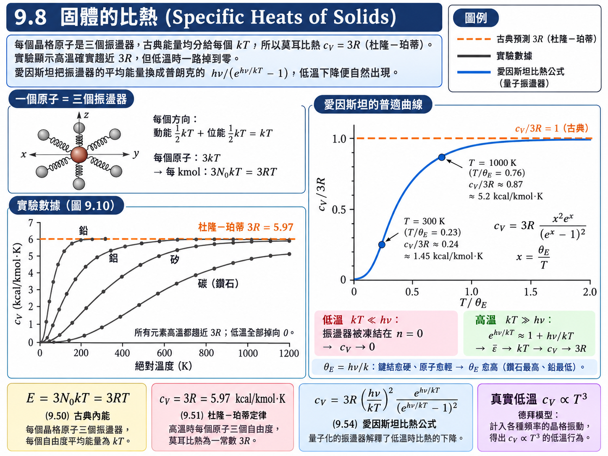
圖 9.10 是鉛、鋁、矽、碳（鑽石）的實測 \(c_V\)。高溫時，四者都趨近 \(3R \approx 6 \ \text{kcal}/\text{kmol}\cdot\text{K}\) 這條線——杜隆－珀蒂定律沒錯。但在低溫，\(c_V\) 一路掉向零，而且鑽石要到上千 K 才接近 \(3R\)。
這和瑞利－金斯公式的處境一模一樣：瑞利－金斯只在低頻對，杜隆－珀蒂只在高溫對；兩者失敗的條件其實是同一個——\(h\nu\) 不再遠小於 \(kT\)。兩者也都用了能量均分定理，而能量均分的前提是「能量連續」。既然問題出在同一個地方，解藥也相同：把每個振盪器的平均能量從 \(kT\) 換成 \((9.37)\)。
推導：愛因斯坦比熱公式（量子）#
把晶格振盪器當作普朗克振盪器：
（\(f(\nu)\) 是 \(\alpha = 0\) 的波色－愛因斯坦分布：晶格振動的量子是聲子，和光子一樣是數目不守恆的波色子。）\(3N_0\) 個振盪器的總內能：
對 \(T\) 微分。分子 \(3N_0h\nu\) 與 \(T\) 無關，只需微分分母：
這就是愛因斯坦比熱公式 (Einstein specific heat formula)。和古典的 \(3R\) 最大的不同是：比熱與溫度有關。
高溫與低溫極限#
高溫 \(kT \gg h\nu\)。 由【已知 4】，\(e^{h\nu/kT} \approx 1 + \dfrac{h\nu}{kT}\)：
平均能量回到古典的 \(kT\)，比熱也就回到杜隆－珀蒂的 \(3R\)。（直接看 \((9.54)\) 也一樣：令 \(x = h\nu/kT \to 0\)，\(\dfrac{x^2e^x}{(e^x - 1)^2} \to \dfrac{x^2}{x^2} = 1\)。）
低溫 \(kT \ll h\nu\)。 \(e^{h\nu/kT} \gg 1\)，\((9.54)\) 變成 \(c_V \approx 3R\left( \dfrac{h\nu}{kT} \right)^2e^{-h\nu/kT} \to 0\)。熱能不足以把振盪器從 \(n = 0\) 激發到 \(n = 1\)，振盪器被「凍結」，無法再吸收熱量——和普朗克公式中被凍結的高頻駐波是同一件事。
若定義愛因斯坦溫度 \(\theta_E \overset{\text{def}}{=} h\nu/k\)，\((9.54)\) 只依賴 \(T/\theta_E\) 一個比值，所有固體共用同一條曲線，只是「刻度」不同。鍵結愈硬、原子愈輕，振動頻率 \(\nu\) 愈高，\(\theta_E\) 就愈高——這正是鑽石（輕的碳原子、極硬的共價鍵）要到很高溫才接近 \(3R\)，而鉛（重原子、軟金屬鍵）在室溫早已飽和的原因。
補充例題：鑽石在室溫的比熱#
題目： 取鑽石的愛因斯坦溫度 \(\theta_E \approx 1320 \ \text{K}\)（愛因斯坦 1907 年擬合鑽石數據所用的量級），以 \((9.54)\) 估算其在 \(300 \ \text{K}\) 與 \(1000 \ \text{K}\) 的 \(c_V\)，並與圖 9.10 比較。
解答：
令 \(x = \theta_E/T\)，\((9.54)\) 寫成 \(c_V = 3R\,\dfrac{x^2e^x}{(e^x - 1)^2}\)。
\(T = 300 \ \text{K}\)：
\(T = 1000 \ \text{K}\)：\(x = 1.32\)，\(\dfrac{c_V}{3R} \approx 0.867\)，\(c_V \approx 5.2 \ \text{kcal}/\text{kmol}\cdot\text{K}\)。
兩個數字都與圖 9.10 中鑽石曲線的讀值（約 \(1.4\) 與 \(5\)）相當吻合。
【進階探討：愛因斯坦模型的不足】 在極低溫，愛因斯坦模型預測 \(c_V\) 以 \(e^{-\theta_E/T}\) 的形式指數地降為零，但實驗顯示 \(c_V \propto T^3\)，降得比較慢。原因是【假設 1】太粗糙：真實晶格中的原子並非各自獨立地以單一頻率振動，而是集體形成各種波長的振動模式，其中長波長的模式頻率很低，即使在極低溫也能被激發。德拜模型 (Debye model) 用類似 \(9.5\) 數駐波的方法計入這些頻率的分布，得到正確的 \(T^3\) 律。
另一個留給下一節的謎題：金屬中有大量自由電子。若它們像理想氣體分子一樣每顆分到 \(\frac{3}{2}kT\)，金屬的比熱應該是 \(3R + \frac{3}{2}R = 4.5R\)，但實驗上金屬與絕緣體一樣都約為 \(3R\)。自由電子的熱能跑到哪裡去了？
9.9 金屬中的自由電子 (Free Electrons in a Metal)#
把統計用到金屬中的自由電子。這裡處理的是導體——價電子不屬於任何一個原子，可以在整塊金屬中自由移動；半導體要等到第十章。
電子是費米子，\(f(\epsilon)\) 自然是 \((9.29)\) 的費米－迪拉克分布。剩下的問題又是 \(g(\epsilon)\)：每個能量有幾個電子態？這個技巧已經用過兩次了——不能直接算 \(g(\epsilon)\)，就先找一個「態均勻分布」的參數。這次直接沿用 \(9.5\) 的 \(j\) 空間：電子的物質波在金屬這個「箱子」裡也必須形成駐波，就像第五章箱子中的粒子。
假設與已知 (Assumptions & Preliminaries)#
【假設 1】 自由電子氣 (Free-electron gas)： 金屬是邊長 \(L\)、體積 \(V = L^3\) 的立方體箱子；價電子在箱內位能為零、可自由移動，被箱壁限制在金屬內部；忽略電子與電子、電子與離子之間的交互作用。只有價電子算自由電子——內層的 \(1s\)、\(2s\) 等電子被原子核牢牢束縛，不能算進來。
\(V\) : 金屬的體積 (Volume of the metal)，\([\text{m}^3]\)
\(N\) : 自由電子的總數 (Number of free electrons)，\([\text{無單位}]\)
【已知 1】 費米－迪拉克分布 \((9.29)\)： \(9.4\) 的結果，每個態被佔據的機率。
\[f_{FD}\left( \epsilon \right) = \frac{1}{e^{\left( \epsilon - \epsilon_F \right)/kT} + 1}\]【已知 2】 \(j\) 空間中的駐波數 \((9.33)\)： \(9.5\) 的結果。立方體箱子中的駐波計數與波的種類無關，可直接沿用；但前面的因子 \(2\) 意義改變——對電子而言不是兩個偏振方向，而是兩個自旋方向 \(m_s = \pm\frac{1}{2}\)。
\[g\left( j \right)dj = \pi j^2\,dj, \qquad j = \frac{2L}{\lambda}\]【已知 3】 德布羅依波長 (de Broglie wavelength)： 任何具有動量 \(p\) 的粒子都伴隨一個波，波長與動量成反比；金屬中的自由電子因此可以當成箱子裡的駐波來數。
\[\lambda = \frac{h}{p}\]\(p\) : 電子動量 (Electron momentum)，\([\text{kg}\cdot\text{m}\cdot\text{s}^{-1}]\)
【已知 4】 非相對論性能量—動量關係 (Non-relativistic energy–momentum relation)： 速度遠小於光速時，動能 \(\epsilon = p^2/2m\)；反過來寫，就能用能量表示動量。
\[p = \left( 2m\epsilon \right)^{1/2}\]\(m\) : 電子質量 (Electron mass)，\([\text{kg}]\)，\(m \approx 9.11 \times 10^{-31} \ \text{kg}\)
【假設 2】 低溫近似 (Low-temperature approximation)： \(9.4\) 指出金屬的費米溫度高達 \(10^4\)–\(10^5 \ \text{K}\)，因此一般溫度下 \(f_{FD}\) 可以用 \(T = 0\) 的步階函數近似。
\[\begin{split}f_{FD}\left( \epsilon \right) = \begin{cases} 1, & \epsilon < \epsilon_F \\ 0, & \epsilon > \epsilon_F \end{cases}\end{split}\]【推導 1】 \(j\) 與能量的關係 (Relating \(j\) to energy)： 目標是把 \(j\) 與 \(\epsilon\) 連起來，再求 \(dj\)。
\[\begin{split}\begin{gather*} j &\overset{\text{已知 2}}{=}& \frac{2L}{\lambda} \\ j &\overset{\text{已知 3}}{=}& \frac{2Lp}{h} \\ j &\overset{\text{已知 4}}{=}& \frac{2L\left( 2m\epsilon \right)^{1/2}}{h} \\ dj &=& \frac{L}{h}\left( \frac{2m}{\epsilon} \right)^{1/2}d\epsilon \end{gather*}\end{split}\]
推導：電子態的數目#
把 \((9.33)\) 中的 \(j\) 與 \(dj\) 全部換成 \(\epsilon\)：
\(g(\epsilon)\,d\epsilon\) : 能量介於 \(\epsilon\) 與 \(\epsilon + d\epsilon\) 之間的電子態數 (Number of electron states)，\([\text{無單位}]\)
前面一長串只是與體積、質量、普朗克常數有關的常數；重要的是態密度正比於 \(\sqrt{\epsilon}\)——和 \(9.3\) 理想氣體的 \((9.7)\) 一模一樣，因為兩者都是三維空間中的自由粒子。以教室比喻：能量愈高，那一排的座位愈多，第二排的座位數是第一排的 \(\sqrt{2}\) 倍，第三排是 \(\sqrt{3}\) 倍……。這個 \(g(\epsilon)\)——能態密度 (density of states)——在第十章會反覆出現。
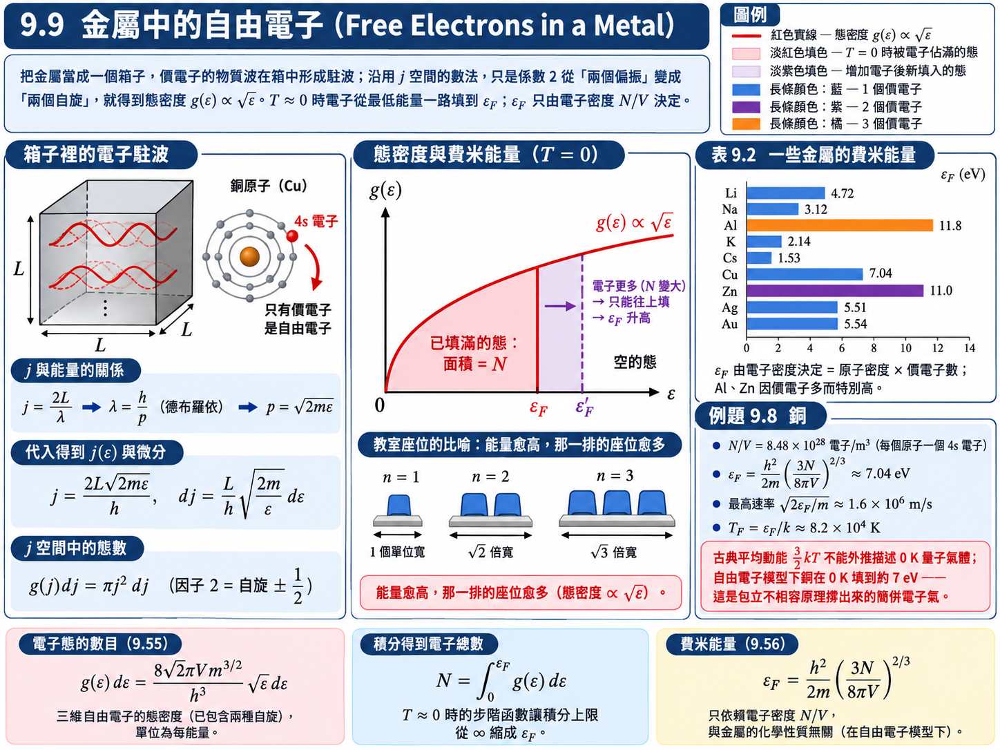
推導：費米能量#
電子總數等於「態數 \(\times\) 佔據機率」對所有能量積分。由【假設 2】，被積函數在 \(\epsilon_F\) 以上為零——積分裡出現步階函數是最令人開心的事，因為上限可以直接從 \(\infty\) 縮成 \(\epsilon_F\)：
這一步做完，\(9.4\) 反覆強調的「\(\epsilon_F\) 是由粒子數決定的歸一化常數」就有了具體的數學形式：\(N \propto \epsilon_F^{3/2}\)。把 \(\epsilon_F\) 解出來（利用 \(\left( 16\sqrt{2} \right)^{2/3} = \left( 2^{9/2} \right)^{2/3} = 8\)）：
\(N/V\) : 自由電子的數密度 (Free-electron density)，\([\text{m}^{-3}]\)
費米能量只依賴電子密度 \(N/V\)，與樣品大小無關，而且密度愈高，\(\epsilon_F\) 愈高。這和 \(9.4\) 的教室比喻完全一致：已經有 \(30\) 個學生填滿了前三排，費米能量在第三排；再進來兩個學生，前三排已經沒位置，只能坐第四排，費米能量就升到第四排。數學給了我們精確的冪次 \(\frac{2}{3}\)，但「電子愈多、費米能量愈高」這個結論，不用積分就能從不相容原理預測出來。
例題 9.8：銅的費米能量#
題目： 求出銅的費米能量。假設每個銅原子貢獻一個自由電子給電子氣（這是很合理的假設：由第七章的電子組態，銅原子在封閉的內殼層外只有一個 \(4s\) 電子）。銅的密度為 \(8.94 \times 10^3 \ \text{kg}/\text{m}^3\)，原子質量為 \(63.5 \ \text{u}\)。
解答：
每個原子貢獻一個電子，所以電子密度等於原子密度。\(1 \ \text{u} = 1.66 \times 10^{-27} \ \text{kg}\)：
【物理知識回顧】 在本章自由電子模型的 \(T=0\) 極限，銅的費米能量約為 \(7.04\ \mathrm{eV}\)，對應 \(v_F=\sqrt{2\epsilon_F/m}\approx1.6\times10^6\ \mathrm{m/s}\)。即使沒有熱激發，包立原理仍使電子逐態填至有限的費米能量，形成簡併電子氣。不能用零溫 Maxwell–Boltzmann 氣體作對照，因為該古典近似在此已失效。
再和熱能比一比：室溫 \(kT \approx 0.026 \ \text{eV}\)，比 \(\epsilon_F\) 小了將近 \(300\) 倍。這個懸殊的比例，下一節會用來回答「電子的熱能跑到哪裡去了」。
表 9.2 一些金屬的費米能量#
金屬 |
符號 |
價電子數 |
費米能量 (eV) |
費米溫度 \(T_F = \epsilon_F/k\) (K) |
|---|---|---|---|---|
鋰 |
Li |
1 |
4.72 |
\(5.5 \times 10^4\) |
鈉 |
Na |
1 |
3.12 |
\(3.6 \times 10^4\) |
鋁 |
Al |
3 |
11.8 |
\(1.4 \times 10^5\) |
鉀 |
K |
1 |
2.14 |
\(2.5 \times 10^4\) |
銫 |
Cs |
1 |
1.53 |
\(1.8 \times 10^4\) |
銅 |
Cu |
1 |
7.04 |
\(8.2 \times 10^4\) |
鋅 |
Zn |
2 |
11.0 |
\(1.3 \times 10^5\) |
銀 |
Ag |
1 |
5.51 |
\(6.4 \times 10^4\) |
金 |
Au |
1 |
5.54 |
\(6.4 \times 10^4\) |
鹼金屬與銅、銀、金都只有一個價電子，費米能量都是個位數的 eV；鋁（\(3\) 個價電子）與鋅（\(2\) 個價電子）明顯高出一截。由 \((9.56)\)，\(\epsilon_F\) 取決於電子密度，而電子密度 \(=\) 原子密度 \(\times\) 每個原子的價電子數——價電子數往往比原子密度更具決定性。以鋁為例，密度 \(2.70 \times 10^3 \ \text{kg}/\text{m}^3\)、原子量 \(27.0 \ \text{u}\)、每個原子 \(3\) 個價電子，代入 \((9.56)\) 得 \(\epsilon_F \approx 11.7 \ \text{eV}\)，與表中數值一致。所有金屬的費米溫度都在 \(10^4 \ \text{K}\) 以上，印證了【假設 2】。
9.10 電子能量分布 (Electron-Energy Distribution)#
有了 \(g(\epsilon)\) 與 \(f(\epsilon)\)，就能寫出金屬中自由電子完整的能量分布，並回答 \(9.8\) 留下的問題。結論先講：除了在很低溫與很高溫，金屬中的電子幾乎不影響比熱。
假設與已知 (Assumptions & Preliminaries)#
【已知 1】 \((9.1)\)、\((9.29)\)、\((9.55)\)： 分別是粒子數 \(=\) 態數 \(\times\) 分布函數、費米－迪拉克分布、自由電子的態密度。
【已知 2】 \((9.56)\) 的另一種寫法： 由 \(9.9\) 的積分結果 \(N = \dfrac{16\sqrt{2}\,\pi Vm^{3/2}}{3h^3}\epsilon_F^{3/2}\)，把 \((9.55)\) 的係數用 \(N\) 與 \(\epsilon_F\) 表示。
\[\begin{split}\begin{gather*} \frac{8\sqrt{2}\,\pi Vm^{3/2}}{h^3} &=& \frac{3}{2}\cdot\frac{16\sqrt{2}\,\pi Vm^{3/2}}{3h^3} \\ &=& \frac{3}{2}N\epsilon_F^{-3/2} \end{gather*}\end{split}\]
推導：電子能量分布#
用【已知 2】把係數換成費米能量，形式更乾淨：
\(n(\epsilon)\,d\epsilon\) : 能量介於 \(\epsilon\) 與 \(\epsilon + d\epsilon\) 之間的自由電子數 (Number of free electrons)，\([\text{無單位}]\)
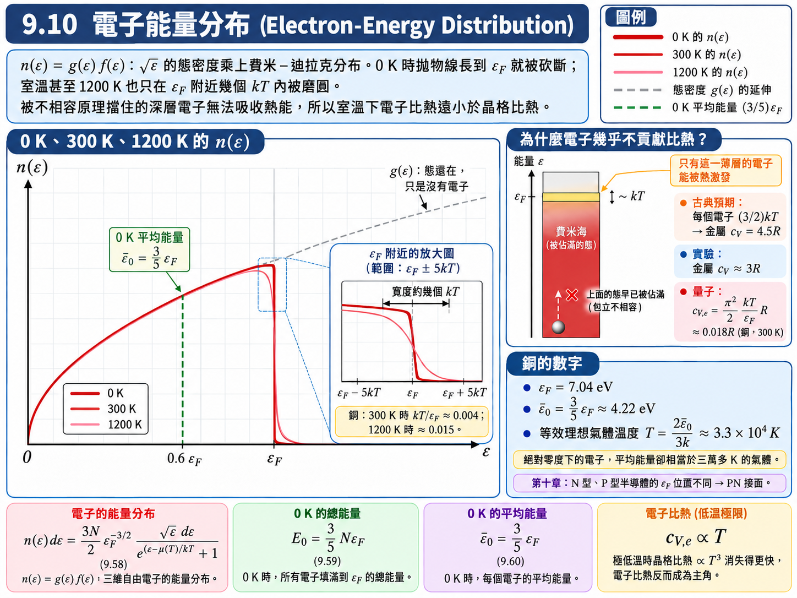
讀圖。 \(g(\epsilon) \propto \sqrt{\epsilon}\) 是一條轉了 \(90°\) 的拋物線；乘上步階函數之後，\(0 \ \text{K}\) 的分布就是這條拋物線一路長到 \(\epsilon_F\)，然後直接被砍斷。\(300 \ \text{K}\) 與 \(1200 \ \text{K}\) 的曲線與 \(0 \ \text{K}\) 幾乎無法分辨，只在 \(\epsilon_F\) 附近幾個 \(kT\) 的範圍內被磨圓，並在 \(\epsilon_F\) 以上拖出一小段尾巴。以銅為例，\(kT/\epsilon_F\) 在 \(300 \ \text{K}\) 只有 \(0.0037\)，在 \(1200 \ \text{K}\) 也只有 \(0.015\)。
這就是為什麼一般的半導體與固態元件，即使在室溫下操作，仍然可以把費米－迪拉克分布當作步階函數：它與真實分布只差一點點。在一階近似 (first-order approximation) 下，實務上一直都這樣用。
推導：絕對零度的平均電子能量#
\(T = 0\) 時 \(f_{FD}\) 是步階函數，積分上限縮成 \(\epsilon_F\)：
\(E_0\) : \(0 \ \text{K}\) 時自由電子的總能量 (Total energy at 0 K)，\([\text{J}]\)
\(\overline{\epsilon}_0\) : \(0 \ \text{K}\) 時的平均電子能量 (Average electron energy at 0 K)，\([\text{J}]\) 或 \([\text{eV}]\)
（\((9.59)\)、\((9.60)\) 是課本 \(9.10\) 節的內容，投影片沒有列出。）平均值比 \(\frac{1}{2}\epsilon_F\) 高，因為 \(g(\epsilon) \propto \sqrt{\epsilon}\)，高能量的態比較多。
補充例題：銅中自由電子在 0 K 的平均能量#
題目： 求銅中自由電子在 \(0 \ \text{K}\) 的平均能量。若要讓理想氣體分子的平均能量等於這個值，氣體溫度需要多高？
解答：
令理想氣體的平均能量 \((9.13)\) 等於它：
【物理知識回顧】 絕對零度下的銅，自由電子的平均能量相當於三萬多 K 的理想氣體。這不是熱能——溫度是零——而是不相容原理撐出來的「量子壓力」。這也提醒我們：對費米子而言，「溫度」與「平均能量」之間不再是古典的 \(\frac{3}{2}kT\) 關係。
為什麼自由電子幾乎不貢獻比熱#
回到 \(9.8\) 的謎題：古典預期每個自由電子分到 \(\frac{3}{2}kT\)，金屬比熱應為 \(4.5R\)，實驗卻只有約 \(3R\)。
答案藏在上面那張分布圖裡。溫度從 \(0\) 升到 \(T\)，電子能吸收的熱能大約只有 \(kT\)。一個深埋在 \(\epsilon_F\) 下方好幾 eV 的電子，吸收 \(kT\) 之後想去的態早就被別的電子佔滿了——不相容原理禁止它移動。只有位在 \(\epsilon_F\) 附近、上方幾個 \(kT\) 內就有空位的電子，才能真正被熱激發。粗估如下（\(g(\epsilon_F)\) 為費米能量處的態密度）：
\(\Delta E\) : 自由電子因溫度升高而增加的能量 (Thermal energy of the electron gas)，\([\text{J}]\)
\(c_{V,e}\) : 自由電子對比熱的貢獻 (Electronic specific heat)，\([\text{J}\cdot\text{K}^{-1}]\)
第一行的方括號是「能被激發的電子數」（費米能量附近寬度 \(kT\) 內的態數），乘上每顆約得到的能量 \(kT\)。換成每 kmol（\(Nk \to R\)），嚴格計算（索末菲 Sommerfeld）給出的係數是 \(\frac{\pi^2}{2}\) 而非 \(3\)：
以銅在 \(300 \ \text{K}\) 為例，\(kT/\epsilon_F \approx 0.0037\)，\(c_{V,e} \approx 0.018R\)，只有晶格貢獻 \(3R\) 的 \(0.6\%\)——完全被淹沒。
這也解釋了投影片上那句「除了在很高和很低溫」：
極低溫：晶格比熱以 \(T^3\) 的速度消失，電子比熱只以 \(T^1\) 的速度消失，到了幾 K 以下電子反而成為主角。
較高溫但仍滿足 \(T\ll T_F\)：自由電子模型的線性比熱項隨 \(T\) 增加。接近 \(T_F\) 或材料已發生相變時，不能繼續外推此低溫公式。
【物理知識回顧】 對低溫、低能量的熱激發與線性輸運，費米能階附近的可用態尤其重要。這個範圍限制不能省略：若提供足夠高的光子能量，較深的電子也可被激發。因此不能把「只有費米面附近電子參與」推廣到所有光吸收或高能過程。
第十章會把這個圖像搬到半導體：在純矽中加入不同的雜質，可以把費米能階往上推（N 型）或往下拉（P 型）；兩種材料一接觸，費米能階必須拉平，於是產生空乏區與內建電場。二極體、電晶體乃至所有積體電路，都是從這條步階函數與它的位置出發的。
本章總結
本章從「粒子數太多，只能看群體行為」出發，建立了三種統計分布，並把它們用回第二章的黑體輻射、第四章的雷射，以及固體的熱與電：
計數的基本式 \(n(\epsilon) = g(\epsilon)f(\epsilon)\)：\(f\) 由粒子種類決定，\(g\) 由系統決定。\(g\) 無法直接數時，就到態均勻分布的空間（動量空間、\(j\) 空間）去數，再做變數變換——這招用了三次。
馬克士威爾－波茲曼統計：\(f_{MB} = Ae^{-\epsilon/kT}\)。理想氣體的平均能量 \(\frac{3}{2}kT\)，速率 \(\propto \sqrt{T/m}\)；能量均分定理說每個平方項分到 \(\frac{1}{2}kT\)。
量子統計：交換對稱性區分波色子（\(-1\)，同態增強）與費米子（\(+1\)，同態排斥）；高能量時兩者都退化成古典分布。費米－迪拉克分布在 \(T = 0\) 是以 \(\epsilon_F\) 為界的步階函數，而金屬的 \(T_F \sim 10^4\)–\(10^5 \ \text{K}\)，室溫幾乎等於絕對零度。
黑體輻射：駐波密度 \(G(\nu) = 8\pi\nu^2/c^3\) 是共同的骨架；瑞利－金斯給每個駐波 \(kT\) 而發散，普朗克給 \(h\nu/(e^{h\nu/kT} - 1)\) 而成功。光子就是 \(\alpha = 0\) 的波色子；維恩定律與史蒂芬－波茲曼定律分別是普朗克曲線的峰值與面積。
愛因斯坦係數：\(B_{ij} = B_{ji}\)、\(A_{ji}/B_{ji} = 8\pi h\nu^3/c^3\)——受激放射必然存在，短波長雷射較難，且雷射必須靠居量反轉。
固體比熱：古典的杜隆－珀蒂 \(3R\) 只在高溫成立；把晶格振盪器量子化（愛因斯坦比熱公式）後，低溫的比熱下降就自然出現。
自由電子：態密度 \(\propto \sqrt{\epsilon}\)，費米能量 \(\epsilon_F = \frac{h^2}{2m}\left( \frac{3N}{8\pi V} \right)^{2/3}\) 約為數個 eV，\(0 \ \text{K}\) 平均能量 \(\frac{3}{5}\epsilon_F\)；只有 \(\epsilon_F\) 附近的電子能被熱激發，所以電子幾乎不貢獻比熱。
貫穿整章的其實只有一條線：古典的能量均分在 \(h\nu \gtrsim kT\) 時必然失敗——黑體輻射的高頻、固體比熱的低溫都是如此；而量子統計在同一個地方把它修好。下一章，我們帶著費米能階走進固體與半導體。